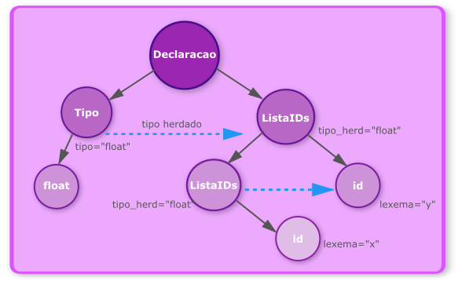
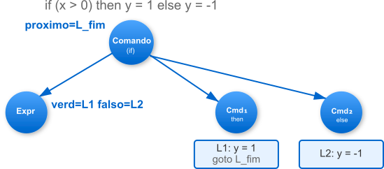

10 Analisadores Semânticos: a determinação do significado
Está sem tempo? Leia o Expresso.
Após as fases de análise léxica e sintática, um compilador já será capaz de reconhecer corretamente a estrutura de um programa. Ele pode afirmar, com certeza, que uma sequência de tokens como int x = y + z; conforma-se à gramática de uma declaração de variável seguida de uma atribuição e é formado por um conjunto de tokens válido na linguagem. Contudo, a análise sintática é agvérticestica ao significado. Ela não sabe o que int, x, y ou z significam. Foram y e z declarados anteriormente? Seus tipos são compatíveis com o operador +? O resultado pode ser armazenado em uma variável do tipo int? Responder a essas perguntas é a tarefa da análise semântica.
A análise sintática garante que um programa tem a forma correta, mas não garante que ele faz qualquer sentido. A atenta leitora talvez já tenha se deparado com a famosa frase do linguista Noam Chomsky: Colorless green ideas sleep furiously, Ideias verdes incolores dormem furiosamente. Esta frase é, de longe, a forma mais simples de entender o valor da análise semântica. A frase é gramaticalmente sintaticamente impecável em inglês, um adjetivo precede outro adjetivo que precede um substantivo, seguido por um verbo e um advérbio. Ainda assim, semanticamente, Colorless green ideas sleep furiously é um disparate agressivo.
Em linguagens de programação, este tipo de disparate pode acontecer com mais frequência do que a sociedade deveria poder aguentar. Por exemplo, uma gramática livre de contexto poderia perfeitamente aceitar a construção x = "olá" * 5;. Estruturalmente, temos um identificador, um operador de atribuição e uma expressão. No entanto, para a maioria das linguagens, multiplicar uma string por um número, exceto em casos específicos como em Python, é uma operação sem significado. Um comportamento contra-intuitivo mesmo que a linguagem permita. Cabe a análise semântica detectar e rejeitar tais absurdos. Exceto quando a linguagem permitir, claro.
A análise semântica é a fase do compilador que preenche essa lacuna, verificando se as construções sintaticamente válidas formam um conjunto de instruções coerente e com significado, de acordo com as regras da linguagem. Mesmo que as regras sejam contra-intuitivas como algumas do Python e outras do JavaScript.
Contra-intuições Semânticas EmPython****
# Multiplicação de string por booleano
resultado = "texto" * True # Retorna "texto"
resultado = "texto" * False # Retorna ""
# Soma de booleanos com números
valor = True + True + False # Retorna 2
valor = 50 + True # Retorna 51
# Lista multiplicada por número negativo
lista = [1, 2, 3] * -1 # Retorna []
# Uso de and/or para retornar valores não booleanos
resultado = 0 or "default" # Retorna "default"
resultado = 5 and "texto" # Retorna "texto"Contra-intuições Semânticas Em JavaScript
// NaN não é igual a si mesmo
resultado = NaN === NaN; // Retorna false
// Conversão implícita em comparações
resultado = "5" - 3; // Retorna 2
resultado = "5" + 3; // Retorna "53"
// Incremento de string numérica
let x = "5";
x++; // x agora é 6 (número)
// Array com buracos
const arr = [1,,3];
arr.length; // Retorna 3
arr[1]; // Retorna undefined
// Conversão de booleano para número
resultado = true + true; // Retorna 2
resultado = true - false; // Retorna 1
// Infinity é um número
resultado = typeof Infinity; // Retorna "number"
resultado = 1/0; // Retorna InfinityA análise semântica é a ponte que conecta a estrutura à semântica, garantindo que o programa não seja apenas bem-formado, mas também que tenha sentido.
10.1 Perspectiva Histórica: A Evolução da Análise Semântica
A análise semântica, o centro nervoso do compilador para significado e a coerência, não nasceu pronta. Sua história é uma jornada que acompanha a própria evolução das linguagens de programação, partindo de verificações simples e dispersas para se tornar uma estrutura formal e sofisticada. A incansável leitora poderá traçar essa trajetória desde os primórdios da computação até os complexos sistemas de tipos que usamos hoje. A Figura Figure 10.1 ilustra essa evolução.
Nos primeiros dias da compilação, com linguagens como o FORTRAN I (1957), a análise semântica era uma atividade ad-hoc. Não havia uma fase distinta especificamente destinada a análise de sentido; as verificações de tipo e coerência eram feitas de forma improvisada, entrelaçadas diretamente com a lógica de geração de código. O objetivo era fazer o programa funcionar, e a separação de responsabilidades era uma ambição distante. Vamos fixar o marco inicial desta jornada de criação e evolução no ALGOL 60 (1960). O projeto de linguagem de programação que fez a primeira tentativa séria de separar a sintaxe (a forma) da semântica (o significado). Mais importante, o ALGOL 60 introduziu o conceito revolucionário da estrutura de blocos e, consequentemente, do escopo léxico, forçando os compiladores a entenderem em que bloco de código uma determinada variável era válida. Sem dúvidas uma das primeiras tarefas verdadeiramente semânticas atribuídas a um compilador.
A necessidade de rigor, programas que rodassem sempre da mesma forma e com os mesmos resultados, levou a uma era de formalização na década seguinte. Em vez de manter um conjunto regras desconexas espalhadas pelo código do compilador, os pesquisadores buscaram uma base teórica sólida. Que explicassem, justificassem e formalizassem a análise semântica. Neste interim, Robert Floyd (1967) contribuiu ao associar a semântica dos programas à lógica formal através de asserções e invariantes. Contudo, o grande salto foi dado por Donald Knuth (1968) com suas Gramáticas de Atributos. Pela primeira vez, havia um formalismo poderoso e sistemático para descrever e implementar a análise semântica. As regras semânticas podiam agora ser anexadas diretamente às regras da gramática sintática, permitindo que informações como tipos de dados fluíssem pela árvore sintática de forma estruturada. A linguagem Pascal, projetada por Niklaus Wirth (1971), foi um exemplo brilhante dessa nova abordagem, demonstrando como uma análise semântica completa e estruturada poderia ser elegantemente implementada em um único passo. Neste ponto, tínhamos a base teórica, Floyd, uma formatação prática, Knuth, e uma linguagem que a utilizava, Wirth.
Com fundamentos sólidos estabelecidos, a fase seguinte foi de sistematização e popularização. O livro Principles of Compiler Design de Aho e Ullman (1977), o famoso Livro do Dragão, estabeleceu a estrutura canônica dos compiladores, consolidando a análise semântica como uma fase bem definida. Paralelamente, a linguagem C, desenvolvida por Dennis Ritchie (1972) e padronizada neste período, demonstrava que um sistema de tipos simples mas rigoroso poderia ser extremamente eficaz, influenciando profundamente o design de compiladores com sua abordagem pragmática de verificação de tipos em tempo de compilação. Foi nesse período que uma das ideias mais poderosas da teoria das linguagens surgiu: a inferência de tipos. O algoritmo W, desenvolvido por Robin Milner (1978) para a linguagem ML, permitiu que o compilador deduzisse os tipos das variáveis automaticamente, sem a necessidade de anotações explícitas, combinando segurança e flexibilidade de uma forma inédita, um contraste marcante com a filosofia da linguagem C, que exigia declarações explícitas mas oferecia controle direto sobre a representação em memória. Ao mesmo tempo, linguagens como Ada (1983) exploravam o outro extremo, implementando sistemas de tipos extremamente ricos e complexos, projetados para a construção de software robusto e de missão crítica, enquanto o C mantinha sua posição como a escolha para programação de sistemas, nos quais a previsibilidade e o controle fino da memória e performance eram mais valorizados que a expressividade do sistema de tipos.
A partir de meados da década de 1980, a complexidade das linguagens explodiu, trazendo consigo desafios semânticos sem precedentes. O C++ (1985), com a introdução de templates e sobrecarga de funções e operadores, exigiu que os analisadores semânticos resolvessem nomes e tipos em contextos muito mais elaborados. O Java (1995) popularizou um modelo híbrido, realizando verificações de tipo rigorosas tanto em tempo de compilação quanto em tempo de execução através da JVM. Paralelamente, a tradição funcional, representada pelo Haskell (1990), continuou a empurrar as fronteiras da teoria, introduzindo conceitos como type classes e polimorfismo paramétrico avançado, que hoje influenciam o design de muitas linguagens modernas.
10.2 Da Necessidade à Solução: Por Que Gramáticas de Atributos?
A evolução histórica da análise semântica que acabamos de traçar revela um padrão: à medida que as linguagens de programação se tornavam mais expressivas, as verificações semânticas necessárias cresciam em número e complexidade. Contudo, um problema fundamental permanecia sem solução satisfatória: como especificar formalmente essas verificações?
As gramáticas livres de contexto (GLC), poderosas para descrever a sintaxe, revelavam-se insuficientes para capturar regras semânticas. Considere a regra toda variável deve ser declarada antes de seu uso. Uma GLC pode garantir que x = y + z; seja uma atribuição sintaticamente válida, mas não pode verificar se y e z foram previamente declarados. Este tipo de restrição é sensível ao contexto e depende de informações que estão fora da estrutura local da produção.
Durante os anos 1960, a análise semântica nos compiladores era implementada como código ad-hoc espalhado pelo parser. Cada compilador tinha sua própria abordagem, muitas vezes não documentada e difícil de manter. Não havia uma especificação formal da semântica, apenas a implementação. Isso criava problemas sérios:
- Não-portabilidade: reaproveitar código entre compiladores era praticamente impossível;
- Verificação impossível: sem especificação formal, não havia como provar que a implementação estava correta;
- Manutenção custosa: modificar ou estender as regras semânticas exigia alterações profundas no código do compilador;
- Falta de clareza: a semântica da linguagem estava implícita no código, não explícita em documentação.
A comunidade de compiladores necessitava de um formalismo que:
- Estendesse naturalmente as GLCs, mantendo sua elegância matemática;
- Permitisse especificar como informação contextual flui pela árvore sintática;
- Fosse implementável de forma sistemática e automática;
- Servisse tanto como especificação quanto como base para implementação.
A resposta veio em 1968, quando Donald Knuth introduziu as Gramáticas de Atributos. Sua ideia central era engenhosamente simples: se as produções da gramática descrevem a estrutura do programa, por que não anotar essas mesmas produções com regras que descrevem o significado? Em vez de criar um formalismo completamente novo, Knuth estendeu as GLCs adicionando duas características:
- Atributos: propriedades associadas aos símbolos gramaticais, como o tipo de uma expressão;
- Regras Semânticas: equações que definem como calcular atributos a partir de outros atributos.
Esta abordagem unificava sintaxe e semântica sob um único formalismo matemático. A análise semântica deixava de ser código disperso para se tornar um conjunto de equações anexadas à gramática, verificável, modular e automaticamente implementável. Era a ponte que faltava entre a teoria formal das linguagens e a prática da construção de compiladores.
10.3 A Análise Semântica no Contexto do Compilador
Considerando a estrutura de compilação canônica, como definida por Aho (1977), e histórica que estamos adotando ao longo de todo este livro, a análise semântica será a terceira fase do front-end de um compilador, posicionando-se logo após a análise sintática. Como pode ser visto na Figura Figure 10.2. A principal informação de entrada do analisador semântico será a Árvore de Sintática Abstrata, termo importado do inglês Abstract Syntactic Tree, AST, a representação hierárquica da estrutura do programa que foi gerada pelo analisador sintático.

É importante que a sagaz leitora compreenda que, nos compiladores modernos, a análise semântica raramente é um módulo completamente separado que será executado após o término da análise sintática. Neste texto, usaremos esta divisão por motivos didáticos e um pouco de preguiça. Ok, confesso, muita preguiça. Mas, a verdade é que na maior parte dos compiladores modernos, a análise semântica está implementada como um conjunto de procedimentos, conhecidos como ações semânticas, que serão invocados pelo analisador sintático em momentos específicos e importantes da geração da AST. Por exemplo, em um analisador sintático de descida recursiva, \(LL(k)\), as chamadas para as rotinas de verificação semântica podem, simplesmente, ser inseridas no corpo das funções que fazem o parse de cada regra da gramática. Em um analisador \(LR(k)\), bottom-up, uma ação semântica pode ser disparada sempre que o parser realizar uma redução, ou seja, quando reconhece o lado direito de uma produção da gramática.
Essa integração entre as fases sintática e semântica está fundamentada em uma decisão de projeto: a arquitetura do compilador será de uma única passagem, one-pass, ou de múltiplas passagens, multi-pass? São opções diferentes com impacto profundo na complexidade, desempenho e flexibilidade do compilador.
Compiladores de uma passagem: intercalam a análise léxica, sintática, semântica e até a geração de código em uma única travessia do código-fonte. São extremamente rápidos, mas impõem restrições à linguagem, como a exigência de que todas as entidades sejam declaradas antes de serem usadas.
Compiladores de múltiplas passagens: utilizam a AST como uma representação intermediária entre as fases. A primeira passagem constrói a AST, e passagens subsequentes a percorrem para realizar a análise semântica, otimizações e, finalmente, a geração de código. Essa abordagem é mais modular, flexível e adequada para linguagens complexas como C++ ou Java, que permitem declarações em qualquer ordem. A AST, nesse contexto, não é apenas uma estrutura de dados, mas uma estrutura de dados que desacopla a sintaxe do significado.
10.4 Semântica Estática vs. Dinâmica: O Limite da Compilação
As regras semânticas de uma linguagem se dividem em duas categorias, que definem o que pode e o que não pode ser verificado antes da execução do programa. Estas categorias são:
Semântica Estática: compreende todas as regras de significado que podem ser verificadas em tempo de compilação. Essas regras são chamadas de estáticas porque a verificação ocorre através da análise do código-fonte, sem necessidade de execução. A análise semântica concentra-se primariamente em impor essas regras estáticas, que podem ser categorizadas em:
1. Verificações de Escopo e Declarações:
- Toda variável deve ser declarada antes de seu uso;
- Identificadores não podem ser redeclarados no mesmo escopo;
- Variáveis locais ocultam variáveis de escopos externos conforme as regras da linguagem.
2. Verificações de Tipos:
- Os tipos dos operandos de uma expressão devem ser compatíveis com o operador;
- O tipo da expressão atribuída deve ser compatível com o tipo da variável receptora;
- Expressões condicionais (
if,while) devem resultar em valores booleanos; - Operações de indexação de arrays devem usar índices inteiros.
3. Verificações de Sub-rotinas:
- Funções devem ser chamadas com o número correto de argumentos;
- Os tipos dos argumentos passados devem corresponder aos tipos dos parâmetros formais;
- O tipo do valor retornado deve corresponder ao tipo de retorno declarado;
- Funções não-void devem ter pelo menos um comando
returnem todos os caminhos de execução.
4. Verificações de Fluxo de Controle:
- Comandos
breakecontinuesó podem aparecer dentro de laços; - Comandos
returnsó podem aparecer dentro de funções; - Labels referenciados por
gotodevem existir no escopo da função; - Em linguagens com
switch, valores decasedevem ser únicos e do tipo compatível.
5. Verificações de Unicidade e Consistência:
- Campos de estruturas/classes não podem ter nomes duplicados;
- Enumerações não podem ter valores duplicados (quando aplicável);
- Modificadores de acesso (
public,private) devem ser mutuamente exclusivos; - Sobrecarga de funções deve ter assinaturas distintas.
6. Verificações de Acessibilidade:
- Membros
privatesó podem ser acessados dentro da própria classe; - Membros
protectedseguem regras de visibilidade conforme hierarquia de herança; - Variáveis
const/finalnão podem ser modificadas após inicialização.
A leitora deve observar que essas regras são frequentemente dependentes de contexto, característica que as gramáticas livres de contexto, por si sós, não conseguem capturar. Uma expressão como x + y é sintaticamente válida independente de x e y terem sido declarados ou de seus tipos serem compatíveis com o operador +. É a análise semântica que impõe essas restrições contextuais, fazendo dela, em essência, uma verificação de contexto sensível.
Semântica Dinâmica: refere-se aos aspectos do significado do programa que só podem ser determinados em tempo de execução. Diferentemente da semântica estática, essas propriedades dependem dos valores concretos que os dados assumem durante a execução, informação geralmente não disponível durante a compilação. O compilador insere verificações explícitas no código gerado que serão executadas junto com a lógica do programa, detectando violações e gerando exceções ou encerrando a execução.
1. Erros Aritméticos:
- Divisão por zero: impossível detectar estaticamente quando o divisor é uma variável;
- Overflow/Underflow aritmético: quando o resultado de uma operação excede os limites do tipo;
- Operações com valores especiais: operações envolvendo
NaN,Infinityem ponto flutuante; - Raiz quadrada de número negativo: em linguagens sem suporte nativo a números complexos.
int divisor = obterValorDoUsuario();
int resultado = 100 / divisor; // Erro se divisor == 0
int a = INT_MAX;
int b = a + 1; // Overflow: comportamento pode ser indefinido2. Erros de Acesso à Memória:
- Desreferenciamento de ponteiro nulo: acessar memória através de ponteiro não inicializado;
- Acesso fora dos limites de array: índice negativo ou maior/igual ao tamanho do array;
- Dangling pointers: acessar memória já liberada;
- Double free: liberar a mesma região de memória múltiplas vezes;
- Memory leaks: falha em liberar memória alocada (detectável por ferramentas especializadas).
int[] numeros = new int[10];
int indice = calcularIndice();
int valor = numeros[indice]; // Erro se indice < 0 ou indice >= 10
String texto = null;
int tamanho = texto.length(); // NullPointerException3. Erros de Tipo Dinâmico: em linguagens com tipagem dinâmica ou conversões inseguras:
- Conversão de tipo inválida (casting incorreto);
- Chamada de método inexistente em objetos de tipo incorreto;
- Operações entre tipos incompatíveis não detectadas estaticamente.
def processar(obj):
return obj.metodo() # Erro se obj não possui metodo()
resultado = "texto" / 2 # TypeError em**Python**Object obj = "String";
Integer num = (Integer) obj; // ClassCastException em tempo de execução4. Erros de Recursos e Limites do Sistema:
- Stack overflow: recursão muito profunda ou alocação excessiva na pilha;
- Heap exhaustion: falha ao alocar memória dinâmica;
- Deadlock: threads esperando indefinidamente por recursos mutuamente bloqueados;
- Timeout: operações que excedem limites de tempo estabelecidos;
- Limites de arquivo/rede: disco cheio, conexão perdida, arquivo não encontrado.
void recursaoInfinita() {
int array[10000];
recursaoInfinita(); // Estoura a pilha
}
int* p = malloc(SIZE_MAX); // Falha se memória insuficiente5. Violações de Invariantes e Contratos:
- Asserções falhando: condições que deveriam sempre ser verdadeiras;
- Pré-condições violadas: função chamada com argumentos inválidos;
- Pós-condições não satisfeitas: função não produz resultado esperado;
- Invariantes de classe quebradas: estado interno inconsistente.
assert(saldo >= 0); // Falha se invariante violada
void sacar(double valor) {
assert(valor > 0 && valor <= saldo); // Pré-condição
saldo -= valor;
assert(saldo >= 0); // Pós-condição
}6. Erros de Concorrência:
- Race conditions: resultado depende do timing de threads concorrentes;
- Deadlocks: impasse circular na aquisição de recursos;
- Starvation: thread nunca obtém acesso a recurso necessário;
- Atomicidade violada: operação que deveria ser atômica é interrompida.
10.4.1 Indecidibilidade e Trade-offs
A leitora perspicaz notará que muitos desses problemas são indecidíveis estaticamente. O Problema da Parada de Turing prova que não existe algoritmo geral que possa determinar se um programa arbitrário terminará ou entrará em loop infinito. Consequentemente:
- Não é possível determinar estaticamente se um divisor será zero sem executar o código;
- Não é possível prever todos os índices de array que serão usados em tempo de execução;
- Não é possível detectar todos os deadlocks potenciais através de análise estática.
Este fato fundamental força um trade-off no design de linguagens:
Verificações Agressivas (Linguagens Seguras):
- Exemplos: Java, Python, Rust;
- Características: inserem verificações extensivas em tempo de execução;
- Custo: overhead de performance (5-15% tipicamente);
- Benefício: programas nunca apresentam comportamento indefinido; erros são capturados e reportados.
Verificações Mínimas (Linguagens de Sistema):
- Exemplos: C, C++ (sem flags de sanitização);
- Características: assumem que o programador está correto; comportamento indefinido em erros;
- Custo: programas podem corromper memória silenciosamente, criar vulnerabilidades de segurança;
- Benefício: máxima performance; controle total sobre o hardware.
Verificações Opcionais (Abordagem Híbrida):
- Exemplos: C++ com sanitizers, Rust com
unsafe, Python com-O; - Características: verificações podem ser habilitadas/desabilitadas;
- Uso típico: verificações ativadas em desenvolvimento/debug, desativadas em produção.
A análise semântica dinâmica representa, portanto, a última linha de defesa do programa contra comportamento incorreto. Enquanto a semântica estática previne erros que podem ser provados impossíveis, a semântica dinâmica detecta erros que só se manifestam sob condições específicas de execução, transformando falhas catastróficas em exceções controláveis.
10.5 Gramáticas de Atributos: Formalizando a Análise Semântica
Vimos que as gramáticas livres de contexto (GLC) são excelentes para descrever a estrutura sintática de uma linguagem, mas insuficientes para capturar regras contextuais, como a verificação de tipos. Para formalizar a análise semântica de maneira sistemática e rigorosa, precisamos de uma ferramenta mais poderosa. Aqui voltamos a ideia de Donald Knuth.
10.5.1 Da Intuição ao Formalismo: Atributos e Regras Semânticas
Uma Gramática de Atributos é, em sua essência, uma Gramática Livre de Contexto na qual cada símbolo gramatical, terminal ou não-terminal, é anotado com um conjunto de atributos, e cada produção da gramática é acompanhada por um conjunto de regras semânticas que especificam como calcular os valores desses atributos.
- Atributos: São propriedades associadas aos vértices da árvore sintática. Eles podem carregar informações como o tipo de uma expressão, o valor de uma constante, uma string de código gerado, ou um ponteiro para a Tabela de Símbolos.
- Regras Semânticas: São equações que definem o valor de um atributo em termos dos valores de outros atributos nos vértices vizinhos da árvore sintática (pai, filhos ou irmãos).
Esse formalismo transforma a análise semântica em um processo de avaliação de atributos sobre a árvore sintática, um processo conhecido como “decoração” da árvore.
10.5.2 Atributos Sintetizados e Herdados: O Fluxo de Informação
Os atributos são classificados com base na direção em que a informação flui pela árvore sintática. Como pode ser visto na Figura Figure 10.3.
Atributos Sintetizados: um atributo de um vértice é sintetizado se seu valor é calculado a partir dos valores dos atributos de seus filhos. A informação flui de baixo para cima na árvore sintática, das folhas para a raiz. Eles são ideais para agregar informações.
Exemplo: calcular o valor de uma expressão aritmética. Considere a produção expr -> expr1 + term. O atributo valor de expr é naturalmente sintetizado pela soma dos atributos valor de expr1 e term.
- Regra Semântica:
expr.valor = expr1.valor + term.valor
Atributos Herdados: um atributo de um vértice é herdado se seu valor é calculado a partir dos valores dos atributos de seu pai ou de seus irmãos. A informação flui de cima para baixo ou lateralmente na árvore. Eles são perfeitos para propagar informações de contexto.
Exemplo: propagar o tipo em uma declaração de variáveis. Considere a produção declaracao -> tipo lista_vars. O tipo de cada variável em lista_vars depende do tipo especificado no início da declaração.
- Regra Semântica:
lista_vars.tipo_herdado = tipo.tipo_sintetizado
O poder das gramáticas de atributos reside na interação entre esses dois tipos de fluxo, permitindo que informações contextuais, herdadas, influenciem cálculos locais que, por sua vez, são agregados e passados para cima, os atributos sintetizados.
10.5.3 Definição Formal E Exemplos Práticos
Para transformar a análise semântica em um processo sistemático e guiado pela sintaxe, utilizamos o formalismo das Gramáticas de Atributos. Formalmente, uma Gramática de Atributos (AG) é uma tupla \(AG = \{G, A, R\}\), na qual cada componente tem um papel bem definido:
\(G\): A Gramática Livre de Contexto (GLC): a fundação sintática, definida por \(G = \{N, T, P, S\}\), na qual:
- \(N\) é o conjunto de símbolos não-terminais (variáveis sintáticas como
expr,declaracao). - \(T\) é o conjunto de símbolos terminais (tokens como
id,int,+). - \(P\) é o conjunto de produções ou regras gramaticais (ex: \(E \rightarrow E + T\)).
- \(S\) é o símbolo inicial da gramática.
- \(N\) é o conjunto de símbolos não-terminais (variáveis sintáticas como
A GLC descreve a forma, mas não o significado.
\(A\): O Conjunto de Atributos: o componente que carrega a informação semântica. O conjunto \(A\) é a união de todos os atributos associados a cada símbolo gramatical definido como: \(A = \bigcup_{X \in N \cup T} A(X)\).
- Um atributo é uma propriedade ou valor associado a um vértice na árvore sintática, como o tipo de uma variável (
tipo), o valor de uma expressão (valor), ou o código gerado (codigo). - Para cada símbolo \(X\), seu conjunto de atributos \(A(X)\) é dividido em dois grupos disjuntos, \(A(X) = I(X) \cup S(X)\):
- \(I(X)\): Atributos Herdados (Inherited), cujo valor em um vértice é determinado a partir dos atributos de seu vértice-pai ou de seus irmãos. Eles propagam informação de cima para baixo e lateralmente na árvore, distribuindo o contexto.
- \(S(X)\): Atributos Sintetizados (Synthesized), cujo valor em um vértice é calculado a partir dos atributos de seus vértices-filhos. Eles agregam informação de baixo para cima, das folhas em direção à raiz.
- Um atributo é uma propriedade ou valor associado a um vértice na árvore sintática, como o tipo de uma variável (
\(R\): O Conjunto de Regras Semânticas: o cérebro da operação, associando a cada produção \(p \in P\) um conjunto de equações que definem como os atributos são calculados. Para uma produção \(p: X_0 \rightarrow X_1 X_2 \dots X_n\), as regras em \(R\) especificam como calcular:
- Os atributos sintetizados de \(X_0\) a partir dos atributos de \(X_1, \dots, X_n\).
- Os atributos herdados de \(X_1, \dots, X_n\) a partir dos atributos de \(X_0\) ou de outros símbolos \(X_j\) na mesma produção.
10.5.3.1 Exemplo 1: Declaração de Variáveis
Vamos definir uma Gramática de Atributos para processar declarações simples como float x, y;, na qual o tipo deve ser distribuído para cada variável na lista.
1. Gramática (\(G\)): começamos com a seguinte gramática livre de contexto:
\[ \begin{align*} \text{Declaracao} & \rightarrow \text{Tipo} \quad \text{ListaIDs} \\ \text{Tipo} & \rightarrow \textbf{int} \mid \textbf{float} \\ \text{ListaIDs} & \rightarrow \text{ListaIDs}_1, \textbf{id} \mid \textbf{id} \end{align*} \]
2. Análise do Fluxo de Informação: para transformar esta gramática em uma Gramática de Atributos, precisamos primeiro identificar como a informação flui pela árvore sintática que pode ser vista na Figura Figure 10.4:
Na AST da Figura Figure 10.4, podemos observar dois fluxos principais de informação:
Informação que sobe (sintetizada): o tipo declarado (
intoufloat) é reconhecido nas folhas da árvore (tokensintoufloat) e precisa ser propagado para cima até o símboloTipo.Informação que desce (herdada): uma vez que o tipo foi determinado, ele precisa ser distribuído para todos os identificadores na
ListaIDs. Como a lista pode ter múltiplos elementos separados por vírgulas, o tipo deve “fluir para baixo” através da recursão da lista.
3. Definição dos Atributos (\(A\)): com base na análise do fluxo, definimos:
Para o símbolo Tipo:
- Atributo sintetizado
tipo: armazena o tipo reconhecido ('int'ou'float'). A informação flui das folhas, tokens terminais, para cima, logo é sintetizado.
Para o símbolo ListaIDs:
- Atributo herdado
tipo_herdado: recebe o tipo que deve ser atribuído a todos os identificadores. A informação do tipo vem de fora, do paiDeclaracao, e deve ser propagada através da lista, caracterizando um atributo herdado.
Para o terminal id:
- Atributo sintetizado
lexval: contém o nome do identificador, fornecido pelo analisador léxico. Este valor vem da análise léxica e é uma propriedade inerente ao token.
4. Construção das Regras Semânticas (\(R\)): com os atributos definidos, podemos agora estabelecer as regras semânticas que governam como esses atributos são calculados e propagados. As regras semânticas serão sistematicamente derivadas para cada produção da gramática:
Produção 1: \(\text{Declaracao} \rightarrow \text{Tipo} \quad \text{ListaIDs}\). Esta produção conecta a determinação do tipo, filho esquerdo, com sua distribuição, filho direito. A regra semântica estabelece a ponte:
\[\text{ListaIDs.tipo\_herdado} = \text{Tipo.tipo}\]
O valor sintetizado de Tipo, que subiu da folha, agora deve descer como atributo herdado para ListaIDs. Esta é a transição crítica entre fluxo ascendente e descendente que sempre irá requerer atenção.
Produção 2: \(\text{Tipo} \rightarrow \textbf{int}\)
\[\text{Tipo.tipo} = \text{'integer'}\]
Quando reconhecemos o token int, sintetizamos o atributo tipo com o valor semântico correspondente. Esta é uma regra de tradução do léxico para o semântico.
Produção 3: \(\text{Tipo} \rightarrow \textbf{float}\)
\[\text{Tipo.tipo} = \text{'real'}\]
Análogo à produção anterior, mas para o tipo float.
Produção 4: \(\text{ListaIDs} \rightarrow \text{ListaIDs}_1, \textbf{id}\)
Esta produção recursiva é o núcleo da propagação do tipo através da lista:
\[ \begin{align*} \text{ListaIDs}_1\text{.tipo\_herdado} &= \text{ListaIDs.tipo\_herdado} \\ \text{adicionar\_tipo}(\text{id.lexval}, &\text{ListaIDs.tipo\_herdado}) \end{align*} \]
Raciocínio detalhado:
- Primeira regra: o atributo herdado do pai (
ListaIDs) deve ser copiado para o filho recursivo (ListaIDs₁). Isso garante que o tipo continue fluindo através da recursão, alcançando todos os identificadores da lista. - Segunda regra: para o identificador atual (
id), executamos a ação semântica de adicionar seu nome (id.lexval) e tipo (ListaIDs.tipo_herdado) à Tabela de Símbolos.
Produção 5: \(\text{ListaIDs} \rightarrow \textbf{id}\)
Esta é a produção base da recursão:
\[\text{adicionar\_tipo}(\text{id.lexval}, \text{ListaIDs.tipo\_herdado})\]
Quando chegamos ao último, ou ao único, identificador da lista, simplesmente adicionamos suas informações à Tabela de Símbolos. Não há recursão para propagar.
5. Tabela Resumida:
| Produção | Regras Semânticas |
|---|---|
| \(\text{Declaracao} \rightarrow \text{Tipo} \text{ListaIDs}\) | \(\text{ListaIDs.tipo\_herdado} = \text{Tipo.tipo}\) |
| \(\text{Tipo} \rightarrow \textbf{int}\) | \(\text{Tipo.tipo} = \text{'integer'}\) |
| \(\text{Tipo} \rightarrow \textbf{float}\) | \(\text{Tipo.tipo} = \text{'real'}\) |
| \(\text{ListaIDs} \rightarrow \text{ListaIDs}_1, \textbf{id}\) | \(\text{ListaIDs}_1\text{.tipo\_herdado} = \text{ListaIDs.tipo\_herdado}\) adicionar_tipo(id.lexval, ListaIDs.tipo_herdado) |
| \(\text{ListaIDs} \rightarrow \textbf{id}\) | adicionar_tipo(id.lexval, ListaIDs.tipo_herdado) |
6. Exemplo de Avaliação: para a declaração float x, y;, a árvore sintática anotada seria construída conforme ilustrado na Figura Figure 10.5, na qual, temos:
- O atributo
Tipo.tipoé sintetizado com valor'real'; - Este valor é passado como
ListaIDs.tipo_herdado; - O tipo é propagado recursivamente através da lista;
- Cada identificador é adicionado à Tabela de Símbolos com o tipo correto.

10.5.3.2 Exemplo 2: Estrutura de Tomada de Decisão (if-then-else)
Vamos construir uma Gramática de Atributos para processar estruturas condicionais como if (x > 0) then y = 1 else y = -1.
1. Gramática Base (\(G\)):
\[ \begin{align*} \text{Comando} & \rightarrow \textbf{if} \, \text{Expr} \, \textbf{then} \, \text{Comando}_1 \, \textbf{else} \, \text{Comando}_2 \\ \text{Expr} & \rightarrow \text{Expr}_1 \, \text{oprel} \, \text{Expr}_2 \\ \text{Expr} & \rightarrow \textbf{id} \mid \textbf{num} \end{align*} \]
2. Análise do Fluxo de Informação: para processar estruturas condicionais, precisamos identificar como a informação flui pela árvore sintática:

Informação que desce (herdada): cada comando precisa saber qual rótulo usar como destino para continuar a execução após sua conclusão. Isso é necessário para estruturas aninhadas. A expressão booleana precisa conhecer os rótulos de destino para quando a condição for verdadeira ou falsa.
Informação que sobe (sintetizada): cada componente da estrutura tem características que precisam ser agregadas, como informações de tipo ou outras propriedades semânticas.
3. Definição dos Atributos (\(A\))
Para o símbolo Comando:
- Atributo herdado
proximo: rótulo para no qual o fluxo deve ir após executar este comando. - Justificativa: o destino após o comando é determinado pelo contexto (comando pai), não pelo próprio comando.
Para o símbolo Expr:
- Atributo herdado
verdadeiro: rótulo para saltar quando a expressão for verdadeira. - Atributo herdado
falso: rótulo para saltar quando a expressão for falsa. - Justificativa: os destinos dos saltos são determinados pela estrutura de controle que contém a expressão.
- Atributo sintetizado
local: nome da variável ou temporária que armazena o resultado (para expressões não booleanas).
Para os terminais id e num:
- Atributo sintetizado
lexval: valor léxico do identificador ou número.
4. Construção das Regras Semânticas (\(R\))
Assumimos a existência da função auxiliar:
novo_rotulo(): gera um rótulo único (L1, L2, etc.)
Produção 1:
\[\text{Comando} \rightarrow \textbf{if} \, \text{Expr} \, \textbf{then} \, \text{Comando}_1 \, \textbf{else} \, \text{Comando}_2\]
Esta produção implementa a estrutura condicional completa:
\[ \begin{align*} \text{Expr.verdadeiro} &:= \text{novo\_rotulo()} \\ \text{Expr.falso} &:= \text{novo\_rotulo()} \\ \text{Comando}_1\text{.proximo} &:= \text{Comando.proximo} \\ \text{Comando}_2\text{.proximo} &:= \text{Comando.proximo} \end{align*} \]
Para entender o raciocínio por trás dessas regras:
Criação de rótulos: geramos dois rótulos únicos, um para o comando
then(Expr.verdadeiro) e outro para o comandoelse(Expr.falso).Propagação do
proximo: ambos os comandos (theneelse) devem convergir para o mesmo ponto de continuação, que é herdado do contexto externo. Isso garante que, independentemente do caminho tomado, a execução continue no mesmo ponto.Fluxo de controle: a expressão usa seus atributos herdados
verdadeiroefalsopara determinar os destinos dos saltos condicionais.
Produção 2:
\[\text{Expr} \rightarrow \text{Expr}_1 \, \text{oprel} \, \text{Expr}_2\]
Esta produção define como os atributos herdados verdadeiro e falso são usados para especificar a semântica do desvio.
\[\text{realizar\_desvio\_condicional}(\text{Expr}_1\text{.local, oprel.lexval, Expr}_2\text{.local, Expr.verdadeiro, Expr.falso})\]
A regra invoca uma ação semântica que representa a lógica do desvio. Ela usa os locais das subexpressões e os rótulos herdados para indicar que, se a condição Expr₁.local oprel.lexval Expr₂.local for verdadeira, o fluxo deve ir para Expr.verdadeiro; caso contrário, para Expr.falso.
Produção 3: a partir da regra:
\[\text{Expr} \rightarrow \textbf{id}\]
Teremos: \[\text{Expr.local} = \text{id.lexval}\]
Um identificador não requer processamento adicional; seu valor está em sua entrada na Tabela de Símbolos. Apenas registramos sua localização.
Produção 4: considerando a regra:
\[\text{Expr} \rightarrow \textbf{num}\]
Teremos:
\[\text{Expr.local} = \text{num.lexval}\]
Processo análogo ao identificador; constantes são usadas diretamente.
5. Tabela de Regras Semânticas:
| Produção | Regras Semânticas |
|---|---|
| \(\text{Comando} \rightarrow \textbf{if} \, \text{Expr} \, \textbf{then} \, \text{Cmd}_1 \, \textbf{else} \, \text{Cmd}_2\) | \(\text{Expr.verdadeiro} := \text{novo\_rotulo()}\) \(\text{Expr.falso} := \text{novo\_rotulo()}\) \(\text{Cmd}_1\text{.proximo} := \text{Cmd.proximo}\) \(\text{Cmd}_2\text{.proximo} := \text{Cmd.proximo}\) |
| \(\text{Expr} \rightarrow \text{Expr}_1 \, \text{oprel} \, \text{Expr}_2\) | realizar_desvio_condicional(Expr₁.local, oprel.lexval, Expr₂.local, Expr.verdadeiro, Expr.falso) |
| \(\text{Expr} \rightarrow \textbf{id}\) | \(\text{Expr.local} = \text{id.lexval}\) |
| \(\text{Expr} \rightarrow \textbf{num}\) | \(\text{Expr.local} = \text{num.lexval}\) |
6. Exemplo de Avaliação: para o comando if (x > 0) then y = 1 else y = -1 com Comando.proximo = L_fim:
Expr.verdadeirorecebe um novo rótuloL1Expr.falsorecebe um novo rótuloL2Comando₁.proximorecebeL_fim(ambos os ramos convergem para o mesmo destino)Comando₂.proximorecebeL_fim
A árvore sintática deve ser anotada com estes valores, o que permitirá que a estrutura condicional seja processada corretamente com os destinos apropriados para cada um dos caminho de execução.
10.5.3.3 Exemplo 3: Laço de Repetição (while)
Finalmente, vamos construir uma Gramática de Atributos para laços como while (x > 0) do x = x - 1, em que o fluxo de controle deve retornar ao início após cada iteração.
1. Gramática Base (\(G\)):
\[ \begin{align*} \text{Comando} & \rightarrow \textbf{while} \, \text{Expr} \, \textbf{do} \, \text{Comando}_1 \\ \text{Expr} & \rightarrow \text{Expr}_1 \, \text{oprel} \, \text{Expr}_2 \\ \text{Expr} & \rightarrow \textbf{id} \mid \textbf{num} \\ \text{Comando} & \rightarrow \textbf{id} \, \text{=} \, \text{Expr} \end{align*} \]
2. Análise do Fluxo de Informação: para laços de repetição, a análise do fluxo de informação é crucial para garantir que o controle retorne ao início do laço após cada iteração. A árvore sintática para um comando while pode ser vista na Figura Figure 10.7:

Informação que desce (herdada): o comando do corpo do laço precisa saber para que ponto do código deve ir após sua execução, como voltar ao início do laço. A expressão precisa saber para que ponto saltar em caso
verdadeiro, início do corpo, efalso, após o laço.Informação que sobe (sintetizada): cada componente tem propriedades que precisam ser agregadas.
Ponto fundamental: o laço cria um ciclo no fluxo de controle - após executar o corpo, devemos retornar à avaliação da condição.
3. Definição dos Atributos (\(A\)): avaliando símbolo por símbolo, teremos:
Para o símbolo Comando (em geral):
- Atributo herdado
proximo: rótulo para continuar após este comando. Determina o fluxo após a conclusão do comando.
Para o símbolo Expr:
- Atributo herdado
verdadeiro: rótulo quando a condição é verdadeira (entra no corpo). - Atributo herdado
falso: rótulo quando a condição é falsa (sai do laço). Os dois controlam o fluxo baseado na avaliação da condição. - Atributo sintetizado
local: localização do resultado da expressão.
4. Construção das Regras Semânticas (\(R\)): vamos definir as regras individualmente para cada produção.
Produção 1:
\[\text{Comando} \rightarrow \textbf{while} \, \text{Expr} \, \textbf{do} \, \text{Comando}_1\]
Esta é a produção central, que implementa a semântica do laço:
\[ \begin{align*} \text{inicio\_laco} &:= \text{novo\_rotulo()} \\ \text{Expr.verdadeiro} &:= \text{novo\_rotulo()} \\ \text{Expr.falso} &:= \text{Comando.proximo} \\ \text{Comando}_1\text{.proximo} &:= \text{inicio\_laco} \end{align*} \]
Observando o raciocínio por trás dessas regras veremos:
Criação do rótulo de início (
inicio_laco): este é o ponto para o qual voltaremos após cada iteração. Este é um valor gerado localmente na regra para controlar o fluxo; não é um atributo formal do símboloComando.Configuração dos destinos da expressão:
Expr.verdadeiro: cria um novo rótulo que marca o início do corpo do laço.Expr.falso: aponta paraComando.proximo, ou seja, o código após o laço. Quando a condição falha, saímos do laço.
Fechamento do ciclo (
Comando₁.proximo := inicio_laco): esta é a regra fundamental que implementa a semântica do laço. Dizemos ao corpo do laço que, após sua execução, ele deve retornar aoinicio_laco, criando assim o ciclo de repetição.Distinção importante: no
if-then-else, após executar o “then”, saltamos paraproximo(para frente). Nowhile, após executar o corpo, saltamos parainicio_laco(para trás), criando o ciclo.
Produção 2:
\[\text{Comando} \rightarrow \textbf{id} \, \text{=} \, \text{Expr}\]
Comando de atribuição simples (necessário para o corpo do laço). Os atributos são processados conforme apropriado para uma atribuição.
Produção 3:
\[\text{Expr} \rightarrow \text{Expr}_1 \, \text{oprel} \, \text{Expr}_2\]
Expressão relacional (idêntica ao exemplo anterior). Os atributos herdados verdadeiro e falso são usados pela ação semântica para especificar o desvio.
Produção 4: a partir da regra:
\[\text{Expr} \rightarrow \textbf{id}\]
teremos:
\[\text{Expr.local} = \text{id.lexval}\]
Produção 5: a partir da regra:
\[\text{Expr} \rightarrow \textbf{num}\]
teremos:
\[ \text{Expr.local} = \text{num.lexval} \]
5. Tabela de Regras Semânticas:
| Produção | Regras Semânticas |
|---|---|
| \(\text{Comando} \rightarrow \textbf{while} \, \text{Expr} \, \textbf{do} \, \text{Cmd}_1\) | \(\text{inicio\_laco} := \text{novo\_rotulo()}\) \(\text{Expr.verdadeiro} := \text{novo\_rotulo()}\) \(\text{Expr.falso} := \text{Cmd.proximo}\) \(\text{Cmd}_1\text{.proximo} := \text{inicio\_laco}\) |
| \(\text{Comando} \rightarrow \textbf{id} \, \text{=} \, \text{Expr}\) | realizar_atribuicao(id.lexval, Expr.local) |
| \(\text{Expr} \rightarrow \text{Expr}_1 \, \text{oprel} \, \text{Expr}_2\) | realizar_desvio_condicional(Expr₁.local, oprel.lexval, Expr₂.local, Expr.verdadeiro, Expr.falso) |
| \(\text{Expr} \rightarrow \textbf{id}\) | \(\text{Expr.local} = \text{id.lexval}\) |
| \(\text{Expr} \rightarrow \textbf{num}\) | \(\text{Expr.local} = \text{num.lexval}\) |
6. Exemplo de Avaliação:
Para o comando while (x > 0) do x = x - 1 com Comando.proximo = L_fim:
- Um novo rótulo
L_inicioé gerado para o laço; Expr.verdadeirorecebe um novo rótuloL_corpo;Expr.falsorecebeL_fim(sai do laço);Comando₁.proximorecebeL_inicio(retorna ao início - ciclo!).
Diferença fundamental entre o if e o while:
No if-then-else, após executar o “then”, saltamos para proximo (para frente):
\[\text{Comando}_1\text{.proximo} = \text{Comando.proximo}\]
No while, após executar o corpo, saltamos para inicio_laco (para trás):
\[\text{Comando}_1\text{.proximo} = \text{inicio\_laco}\]
Esta diferença nas regras semânticas é o que implementa comportamentos completamente distintos: execução condicional única versus repetição em ciclo. A árvore sintática anotada com estes atributos captura perfeitamente a semântica do laço de repetição.
10.5.4 Avaliação de Atributos: Grafos de Dependência e Ordenação Topológica
As regras semânticas de uma gramática de atributos formam um sistema de equações. Contudo, para resolver esse sistema, precisamos estabelecer uma ordem de avaliação, pois o cálculo de um atributo frequentemente depende do valor de outro. O Grafo de Dependências é a ferramenta formal que nos permite visualizar e determinar essa ordem.
Para uma determinada árvore sintática, o grafo de dependências é um grafo direcionado \(D = (V, E)\) que torna explícitas as interdependências entre os atributos:
- Vértices (\(V\)): Cada vértice no grafo de dependências corresponde a um atributo de um vértice na árvore sintática.
- Arestas (\(E\)): Existe uma aresta direcionada do vértice \((n_1, a_1)\) para \((n_2, a_2)\) se, e somente se, o valor do atributo
a2depende diretamente do valor do atributoa1.

Uma gramática de atributos é considerada não-circular se, para qualquer árvore sintática que ela possa gerar, seu grafo de dependências for acíclico (não contiver ciclos).
O problema de encontrar a sequência correta de avaliação é resolvido pela ordenação topológica do grafo. O algoritmo geral consiste em construir o grafo, verificar se há ciclos e, em caso negativo, percorrê-lo em uma ordem topológica para calcular cada atributo.
10.5.5 Classes de Gramáticas de Atributos e o Impacto na Eficiência
Embora a definição de uma gramática de atributos seja muito flexível, essa flexibilidade tem um custo. Regras semânticas irrestritas podem levar a dependências complexas, difíceis de avaliar ou, no pior caso, a dependências circulares que tornam a avaliação impossível. Para gerenciar essa complexidade, as gramáticas de atributos são classificadas em uma hierarquia baseada nas restrições impostas sobre o fluxo de informação. Em uma estrutura aninhada que pode ser vista na Figura Figure 10.9, cada classe é um subconjunto estrito da anterior, com propriedades específicas que impactam diretamente a implementação do compilador.
Essa classificação é de suma importância para o design de linguagens e compiladores, pois representa um balanço direto entre o poder expressivo das regras semânticas e a eficiência do algoritmo de avaliação.
10.5.5.1 Gramáticas S-Atribuídas
A classe mais simples e restrita. Uma gramática é S-atribuída se ela utiliza apenas atributos sintetizados.
- Característica: A informação flui estritamente de baixo para cima (bottom-up) na árvore sintática.
- Implicação no Compilador: São muito fáceis de avaliar. Uma simples travessia em pós-ordem da árvore é suficiente para calcular todos os atributos. Elas se integram perfeitamente com analisadores sintáticos bottom-up (como LALR, usado por ferramentas como YACC/Bison), nos quais a ação semântica pode ser executada assim que uma produção é reduzida.
- Complexidade: Avaliação em tempo linear, \(O(n)\).
10.5.5.2 Gramáticas L-Atribuídas
Esta é a classe mais importante para a maioria das linguagens de programação modernas. Uma gramática é L-atribuída se, para cada produção \(A \rightarrow X_1 X_2 \dots X_n\), os atributos herdados de um símbolo \(X_j\) no lado direito dependem apenas:
- Dos atributos herdados de \(A\) (o pai).
- De quaisquer atributos dos símbolos à sua esquerda (\(X_1, X_2, \dots, X_{j-1}\)).
- Característica: A informação pode fluir para baixo (herdada) e para cima (sintetizada), mas o fluxo de dependências herdadas segue estritamente a ordem da escrita, da esquerda para a direita. O “L” vem de Left-to-right.
- Implicação no Compilador: Esta restrição é o “ponto ideal” (
sweet spot) do design de compiladores. Ela garante que todos os atributos possam ser avaliados em uma única travessia em profundidade e da esquerda para a direita da árvore sintática. Isso as torna perfeitas para analisadores de descida recursiva (top-down). - Complexidade: Avaliação em tempo linear, \(O(n)\).
10.5.5.3 Gramáticas Não-Circulares
Esta é a classe mais geral de gramáticas de atributos que ainda é utilizável.
- Característica: A única restrição é que o grafo de dependências não pode ter ciclos para nenhuma árvore sintática possível. No entanto, as dependências podem ser complexas, com atributos dependendo de irmãos à sua direita, por exemplo.
- Implicação no Compilador: A ordem de avaliação não é fixa e pode mudar para cada árvore sintática. O compilador não pode usar uma simples travessia; ele é forçado a construir o grafo de dependências explicitamente e executar uma ordenação topológica.
- Complexidade: A avaliação é mais cara, geralmente quadrática (\(O(n^2)\)) ou pior, dependendo da estrutura do grafo. Linguagens com funcionalidades semânticas muito complexas, como templates em C++, podem exigir essa flexibilidade.
10.5.5.4 Gramáticas Circulares
- Característica: Existe pelo menos uma árvore sintática que gera um grafo de dependências com um ciclo. Isso representa uma definição semântica recursiva sem caso base (ex:
a = b + 1eb = a * 2). - Implicação no Compilador: São semanticamente malformadas e inúteis na prática, pois a avaliação de atributos é impossível. Pior ainda, o problema de determinar se uma gramática de atributos geral é circular ou não é indecidível.
A tabela a seguir resume estas classes, suas características e o impacto na complexidade da análise semântica.
| Classe | Característica | Complexidade de Avaliação | Exemplo de Uso |
|---|---|---|---|
| S-atribuída | Apenas atributos sintetizados | \(O(n)\) | Calculadoras, expressões |
| L-atribuída | Restrições em atributos herdados | \(O(n)\) | Maioria das linguagens (C, Java) |
| Absolutamente não-circular | Ordem fixa para todas as árvores | \(O(n)\) | Subclasse de L-atribuídas |
| Não-circular | Ordem depende da árvore | \(O(n^2)\) | Ada, C++ (templates) |
| Circular | Possui ciclos | Indecidível | Não utilizável |
10.5.6 Definição Formal e Exemplo Prático
Uma Definição Dirigida por Sintaxe (SDD) é a especificação formal de uma gramática de atributos. É uma generalização que associa regras semânticas a cada produção de uma GLC. Uma SDD especifica o que deve ser calculado, mas não como ou em que ordem. A ordem de avaliação é determinada pelas dependências entre os atributos.
Com base nos tipos de atributos que utilizam, as SDDs podem ser classificadas em categorias importantes que impactam diretamente a implementação do compilador:
Gramáticas S-Atribuídas: São SDDs que utilizam apenas atributos sintetizados. A avaliação desses atributos pode ser feita de forma natural durante uma travessia em pós-ordem da árvore sintática. Isso as torna perfeitamente compatíveis com analisadores sintáticos bottom-up (como os \(LR\)), nos quais as ações semânticas podem ser executadas no momento em que uma produção é reduzida.
Gramáticas L-Atribuídas: São uma classe mais ampla de SDDs que permitem tanto atributos sintetizados quanto herdados, mas com uma restrição: para uma produção A→X₁X₂…Xₙ, um atributo herdado de Xⱼ só pode depender:
- Dos atributos herdados de
A; e - De quaisquer atributos, herdados ou sintetizados, dos símbolos à sua esquerda,
X₁,…,Xⱼ₋₁.
Essa restrição garante que os atributos possam ser avaliados em uma única travessia em profundidade e da esquerda para a direita da árvore sintática. Isso as torna ideais para implementação em conjunto com analisadores sintáticos top-down (como os \(LL\) e os de descida recursiva).
10.5.7 Esquemas de Tradução Dirigida por Sintaxe (SDT)
Enquanto uma SDD é uma especificação, um Esquema de Tradução Dirigida por Sintaxe (SDT) é uma implementação concreta. Um SDT é uma GLCna qual as ações semânticas (fragmentos de código) são embutidas diretamente no lado direito das produções. Essas ações são executadas no momento em que o analisador sintático reconhece aquela parte da produção.
Exemplo de SDT para uma calculadora simples:
| Produção | Ação Semântica |
|---|---|
| E→E₁+T | { E.valor = E₁.valor + T.valor; } |
| E→T | { E.valor = T.valor; } |
| T→T₁*F | { T.valor = T₁.valor * F.valor; } |
| T→F | { T.valor = F.valor; } |
| F→(E) | { F.valor = E.valor; } |
| F→num | { F.valor = num.lexval; } |
Este é um exemplo de uma gramática S-atribuída, pois todas as ações calculam um atributo para o símbolo à esquerda da produção a partir dos símbolos à direita.
O formalismo das gramáticas de atributos e dos SDTs transforma a análise semântica, que poderia ser uma tarefa ad-hoc e propensa a erros, em um processo sistemático e declarativo. Ele nos permite raciocinar sobre o fluxo de informações contextuais de maneira estruturada, guiada diretamente pela sintaxe da linguagem, personificando o princípio da composicionalidade: o significado do todo é derivado do significado de suas partes.
10.6 Catálogo de Verificações Semânticas Comuns
A análise semântica é a última linha de defesa do front-end contra programas incorretos. Ela é responsável por capturar uma ampla gama de erros que são sintaticamente invisíveis, mas semanticamente inválidos. Esta seção cataloga as verificações mais comuns realizadas por um analisador semântico, com exemplos práticos de código que falhariam em cada verificação.
10.6.1 Verificações Relacionadas a Nomes e Escopos
Estas verificações garantem que os identificadores sejam usados de acordo com as regras de escopo da linguagem. A Tabela de Símbolos é a ferramenta central para realizar essas checagens.
Uso de Identificador Não Declarado: Talvez o erro semântico mais fundamental. O compilador deve garantir que todo identificador (variável, função, etc.) tenha sido declarado antes de ser utilizado.
Exemplo de Erro:
int main() {
int a = 5;
int b = a + c; // ERRO: 'c' não foi declarado.
return 0;
}Declaração Múltipla de Identificador no Mesmo Escopo: A maioria das linguagens proíbe a redeclaração de um mesmo identificador dentro do mesmo escopo.
Exemplo de Erro:
void minhaFuncao() {
int x = 10;
String x = "hello"; // ERRO: 'x' já está definido neste escopo.
}10.6.2 Verificações de Tipo
O coração da análise semântica, a verificação de tipos garante que os dados sejam usados de maneira consistente com suas definições.
Incompatibilidade em Atribuições: O tipo da expressão do lado direito de uma atribuição deve ser compatível (ou poder ser coagido) com o tipo da variável do lado esquerdo.
Exemplo de Erro:
int idade;
idade = "vinte"; // ERRO: Não é possível converter tipo 'string' para 'int'.Incompatibilidade em Operandos de Expressões: Os operandos de um operador devem ter tipos que são válidos para aquele operador.
Exemplo de Erro:
resultado = "Total: " - 10 # ERRO: Operador '-' não suportado entre 'str' e 'int'.Tipo Incorreto em Estruturas de Controle: A expressão de controle em estruturas como if, while e for deve resultar em um tipo booleano (ou um tipo que possa ser coagido para booleano).
Exemplo de Erro (em uma linguagem como Java):
int contador = 0;
if (contador) { // ERRO: 'contador' é int, mas um booleano é esperado.
//...
}10.6.3 Verificações Relacionadas a Sub-rotinas (Funções/Métodos)
Essas verificações garantem que as funções sejam chamadas corretamente, respeitando suas assinaturas.
Número Incorreto de Argumentos em Chamada: A chamada de uma função deve fornecer exatamente o número de argumentos que sua declaração exige.
Exemplo de Erro:
void imprimirSoma(int a, int b) {
std::cout << a + b;
}
int main() {
imprimirSoma(10); // ERRO: Poucos argumentos para a função.
return 0;
}Tipo Incorreto de Argumentos em Chamada: Os tipos dos argumentos passados em uma chamada devem ser compatíveis com os tipos dos parâmetros na declaração da função.
Exemplo de Erro:
void imprimirNome(std::string nome) {
std::cout << nome;
}
int main() {
imprimirNome(123); // ERRO: Tipo de argumento inválido (esperado string, obteve int).
return 0;
}Retorno de Valor Incompatível: O valor retornado por uma função deve ser compatível com o tipo de retorno declarado na sua assinatura.
Exemplo de Erro:
public int obterIdade() {
return "jovem"; // ERRO: Tipo de retorno incompatível.
}10.6.4 Verificações de Controle de Fluxo
Essas regras garantem que as construções de controle de fluxo sejam usadas em contextos apropriados.
break ou continue Fora de um Laço: As palavras-chave break e continue só são permitidas dentro do corpo de estruturas de repetição (como while, for, do-while).
Exemplo de Erro:
void verificar(int x) {
if (x > 10) {
break; // ERRO: 'break' statement not within loop or switch.
}
}Uso de Rótulos (Labels) Inexistentes: Em linguagens que suportam goto, o rótulo de destino deve existir dentro do escopo da função atual.
Exemplo de Erro:
void processar() {
//...
goto erro_fatal; // ERRO: Rótulo 'erro_fatal' não definido.
}10.7 O Produto Final: A Árvore de Sintaxe Abstrata Atribuída
O resultado de uma análise semântica bem-sucedida, em uma passagem ou em múltiplas passagens, não será percebido por um valor booleano indicando sucesso ou falha. O produto tangível desta fase será uma Árvore de Sintaxe Abstrata “Atribuída”, ou em alguns livros árvore sintática abstrata anotada, ou ainda árvore sintática abstrata decorada.
O processo de decorar a árvore consiste em percorrer seus vértices e enriquecê-los com informações semânticas que foram inferidas durante a análise. Este é um processo de atribuição de informação aos vértices da árvore sintática. Por exemplo:
- um vértice que representa o uso de uma variável pode ser decorado com um ponteiro para a entrada correspondente na Tabela de Símbolos;
- um vértice de expressão (como
+ou*) pode ser decorado com o tipo resultante da operação (ex.:intoufloat); - um vértice de declaração de tipo pode ser decorado com informações sobre o layout de memória daquele tipo.
Essa AST atribuída é uma estrutura de dados rica. Ela contém não apenas a estrutura sintática do programa, mas também todo o entendimento contextual que o compilador adquiriu durante o processo de compilação. Ela serve como a única fonte de verdade para as fases subsequentes do processo de compilação, como a geração de código intermediário e a otimização. Nesse sentido, a análise semântica não apenas detecta e elimina erros, mas enriquece a representação do programa com informações que o fortalecem e o preparam para a transformação final em código executável.
A AST é a principal e mais importante estrutura de dados usada como entrada pelo analisador semântico. Mas, não é a única.
Para que um compilador possa realizar verificações semânticas, como garantir que uma variável foi declarada antes de ser usada ou que o tipo de uma expressão é válido, ele precisa de um mecanismo para registrar e recuperar informações sobre os identificadores encontrados no código-fonte. Essa “memória” do compilador é a Tabela de Símbolos. Os processos de análise léxica e sintática precisaram consultar esta tabela para identificar palavras reservadas e tipos básicos, mas é o analisador semântico que fará o uso mais intensivo e complexo desta estrutura.
A Tabela de Símbolos é uma estrutura de dados fundamental que associa cada identificador, ou símbolo, a um conjunto de informações, os atributos que citamos antes, que pertencem ao símbolo. Esta tabela funciona como um dicionário em que as chaves são os nomes dos símbolos e os valores são os metadados coletados sobre eles.
Praticamente todas as fases do compilador interagem com a Tabela de Símbolos:
- Análise Léxica: ao encontrar um identificador, o analisador léxico pode inseri-lo na Tabela de Símbolos se ele ainda não estiver presente. Ou para classificar um determinado lexema como uma palavra reservada, o analisador léxico consulta a tabela;
- Análise Sintática/Semântica: o analisador semântico consulta a Tabela de Símbolos constantemente para verificar declarações, tipos e escopos. Ele também a preenche com informações obtidas das declarações.
- Geração de Código e Otimização: as fases do back-end usam a tabela para obter informações como o tipo de uma variável e seu endereço de memória para gerar o código de máquina apropriado.
A Tabela de Símbolos está detalhada na seção Chapter 14
10.8 Verificação de Tipos, Type Checking
A verificação de tipos é, sem dúvida, a tarefa central da análise semântica. Ela consiste em percorrer a AST e aplicar um conjunto de regras para garantir que os tipos de dados sejam usados de maneira consistente e segura. Um tipo pode ser formalmente definido como um conjunto de valores e um conjunto de operações permitidas sobre esses valores. A verificação de tipos assegura que um programa não tente realizar operações absurdas, como somar uma string a um objeto de arquivo ou calcular a raiz quadrada de um booleano.
10.8.1 A Importância dos Tipos: Prevenindo o “Absurdo” Computacional
Os sistemas de tipos impõem uma disciplina que traz enormes benefícios, principalmente a detecção de uma vasta classe de erros antes mesmo da execução do programa. Essa verificação pode ocorrer em momentos distintos, o que nos leva a uma das mais importantes classificações de linguagens de programação.
10.8.1.1 Tipagem Estática vs. Dinâmica
Tipagem Estática: A verificação de tipos é realizada em tempo de compilação. O compilador analisa o código-fonte, infere ou lê as anotações de tipo e valida todas as operações. Se um erro de tipo é encontrado, a compilação falha. Linguagens como Java, C++, C#, Rust e Haskell são estaticamente tipadas.
Vantagens:
- Detecção Precoce de Erros: Erros de tipo são encontrados durante o desenvolvimento, não em produção.
- Performance: O compilador pode gerar código de máquina altamente otimizado, pois não precisa inserir verificações de tipo em tempo de execução nem carregar “tags” de tipo junto com os dados.
- Documentação e Manutenibilidade: As declarações de tipo servem como uma forma de documentação, tornando o código mais fácil de entender e refatorar.
Desvantagens: Pode ser menos flexível e exigir mais código explícito (boilerplate) do programador.
Tipagem Dinâmica: A verificação de tipos é adiada para tempo de execução. As variáveis não possuem tipos fixos, mas os valores que elas contêm sim. Antes de cada operação, o sistema de tempo de execução verifica se os tipos dos valores são compatíveis. Se não forem, um erro é lançado durante a execução. Linguagens como Python, JavaScript, Ruby e LISP são dinamicamente tipadas.
Vantagens:
- Flexibilidade: permite estruturas de dados heterogêneas e um estilo de programação mais fluido, ideal para prototipagem rápida.
- Menos Verboso: geralmente, não requer anotações de tipo explícitas.
Desvantagens:
- Erros em Tempo de Execução: Erros de tipo só são descobertos quando o código é efetivamente executado, o que pode ocorrer tardiamente no ciclo de vida do software.
- overhead de Performance: A necessidade de verificar tipos em tempo de execução e de armazenar informações de tipo com cada valor impõe uma penalidade de desempenho.
10.8.1.2 Tipagem Forte vs. Fraca
Essa distinção, muitas vezes confundida com estática vs. dinâmica, refere-se ao rigor com que a linguagem impõe suas regras de tipo.
Tipagem Forte: Uma linguagem fortemente tipada não permite que operações sejam realizadas entre tipos incompatíveis, prevenindo comportamento indefinido. Ela pode permitir conversões implícitas (coerção), mas apenas de maneiras bem-definidas e seguras. Por exemplo, emPython (fortemente tipado), 3 + "olá" resulta em um TypeError em tempo de execução, pois a operação não está definida.
Tipagem Fraca: Uma linguagem fracamente tipada possui regras de tipo mais permissivas e pode tentar realizar operações mesmo entre tipos incompatíveis, muitas vezes tratando os dados como sequências de bits. Em C (fracamente tipado), é possível usar um *cast para tratar um ponteiro para um inteiro como um ponteiro para uma estrutura, contornando o sistema de tipos e abrindo a porta para erros difíceis de depurar e vulnerabilidades de segurança.
É importante que a atenta leitora perceba que essas duas classificações são ortogonais. Temos:
- Estática e Forte: Java, Rust, Haskell;
- Estática e Fraca: C, C++;
- Dinâmica e Forte: Python, Ruby;
- Dinâmica e Fraca: Tcl, JavaScript.
A escolha de um sistema de tipos reflete uma filosofia de design da linguagem, um balanço entre segurança, flexibilidade, performance e expressividade.
10.8.2 Equivalência de Tipos: Quando T1 é igual a T2?
Para verificar se uma operação é válida, o compilador precisa primeiro determinar se os tipos envolvidos são equivalentes. Existem duas abordagens principais para isso:
Equivalência por Nome (Nominal): dois tipos são considerados equivalentes se, e somente se, eles têm o mesmo nome. Cada declaração de um novo tipo (ex.: com typedef em C, type em Pascal, ou class em Java) cria um tipo único e distinto dos outros, mesmo que suas estruturas subjacentes sejam idênticas. Essa é a abordagem mais comum em linguagens modernas como Java, C# e C++. Esta abordagem é mais segura e reflete melhor a intenção do programador.
Exemplo:
// Definição da classe para representar um Ponto
class Ponto {
int x;
int y;
public Ponto(int x, int y) {
this.x = x;
this.y = y;
}
}
// Definição da classe para representar um Vetor
class Vetor {
int x;
int y;
public Vetor(int x, int y) {
this.x = x;
this.y = y;
}
}
// Classe principal para testar a compatibilidade
public class TesteTipos {
public static void main(String[] args) {
Ponto p = new Ponto(10, 20);
Vetor v = new Vetor(5, -3);
// A linha a seguir causará um ERRO DE COMPILAÇÃO
// p = v;
// Erro típico: "incompatible types: Vetor cannot be converted to Ponto"
}
}Apesar de Ponto e Vetor serem estruturalmente idênticas, ambas possuem dois campos int chamados x e y, o compilador Java as considera como tendo tipos completamente incompatíveis. A tentativa de atribuir um objeto Vetor a uma variável do tipo Ponto (p = v;) falha com um erro claro, como: error: incompatible types: Vetor cannot be converted to Ponto. Isso ocorre porque, para o Java, o que importa é o nome do tipo. Ponto é um nome, Vetor é outro. Em Java a equivalência é nominal.
Equivalência Estrutural: dois tipos são equivalentes se eles têm a mesma estrutura interna. Os nomes dos tipos são ignorados; o compilador expande as definições de tipo e compara suas formas recursivamente. Essa abordagem é mais flexível, mas pode levar a equivalências acidentais entre tipos que são conceitualmente diferentes. É usada em linguagens como Go e TypeScript.
Exemplo: no exemplo acima, sob equivalência estrutural, Ponto e Vetor seriam considerados o mesmo tipo, pois ambos são estruturas com dois campos inteiros chamados x e y. A atribuição v = p; seria válida.
10.8.3 Compatibilidade de Tipos: Coerção e Conversão (Casting)
Mesmo que dois tipos não sejam equivalentes, eles podem ser compatíveis. A compatibilidade permite que um valor de um tipo seja usado em um contexto que espera outro.
Conversão (Casting): é uma mudança de tipo explícita, solicitada pelo programador. O cast informa ao compilador: “Eu sei o que estou fazendo; trate este valor como se fosse deste outro tipo”. O compilador insere o código necessário para realizar a conversão.
Exemplo em C:
int i;
float f = 3.14;
i = (int)f;Coerção (Coercion): é uma conversão de tipo implícita, realizada automaticamente pelo compilador para que uma operação seja válida. Isso acontece em “promoções numéricas”, por exemplo.
Exemplo:
double d = 5;O compilador automaticamente promove o literal inteiro 5 para o valor de ponto flutuante 5.0 antes da atribuição. A coerção aumenta a conveniência, mas pode mascarar erros graves se as regras não forem bem compreendidas.
10.8.4 Lidando com Polimorfismo: “Muitas Formas”
Polimorfismo, da expressão em grego para muitas formas, é a capacidade de uma única interface, como uma função ou um operador, ser usada com diferentes tipos de dados. Existem três tipos principais de polimorfismo que um sistema de tipos deve gerenciar:
Polimorfismo Ad-hoc (Sobrecarga): ocorre quando múltiplas funções ou métodos compartilham o mesmo nome, mas têm assinaturas (tipos e/ou número de parâmetros) diferentes. O compilador (ou o sistema de tempo de execução) seleciona a implementação correta com base nos tipos dos argumentos fornecidos na chamada. O exemplo clássico é o operador
+, que realiza adição para números e concatenação para strings.Polimorfismo Paramétrico (Generics): permite que uma função ou tipo de dado seja escrito de forma genérica, para que possa lidar com valores de forma idêntica, sem depender de seu tipo. O código é parametrizado por uma ou mais variáveis de tipo. Um exemplo é uma função
reverseque pode reverter uma lista de qualquer tipo, pois o algoritmo de reversão não depende do tipo dos elementos da lista.Polimorfismo de Subtipo (Herança): é a base da programação orientada a objetos. Permite que um objeto de uma classe derivada (subtipo) seja usado em qualquer contexto que espere um objeto da classe base. Por exemplo, uma função que espera um objeto do tipo
Animalpode receber, sem problemas, um objeto do tipoCachorro, assumindo queCachorroherda deAnimal.
10.8.5 A Base Formal dos Sistemas de Tipos
Até agora, discutimos a verificação de tipos de forma intuitiva. No entanto, para que um compilador possa executar essa tarefa de maneira automática e correta, nossa intuição precisa ser traduzida para um sistema matemático rigoroso. A teoria dos tipos nos fornece exatamente esse formalismo, permitindo não apenas especificar as regras de tipo de uma linguagem, mas também provar que um programa é seguro com relação a tipos, conceito chamado de type-safe, antes de sua execução.
O pilar deste sistema é uma afirmação conhecida como julgamento de tipo, em inglês: typing judgment, representada pela seguinte notação:
\[\Gamma \vdash e : \tau\]
A atenta leitora não deve se intimidar com os símbolos. Essa expressão formaliza uma ideia bastante simples e pode ser lida da seguinte forma: “No contexto \(\Gamma\), é possível provar que a expressão \(e\) tem o tipo \(\tau\)”. Vamos dissecar cada componente:
- \(\Gamma\) (Gama): é o contexto de tipagem, também chamado de ambiente. Na prática, ele é a nossa Tabela de Símbolos. É um mapa que armazena as informações de tipo que já conhecemos, como as associações entre nomes de variáveis e seus respectivos tipos (por exemplo, \(\{ x: \text{int}, y: \text{bool} \}\)).
- \(\vdash\) (Turnstile, ou “|-”, ou ainda catraca): é o símbolo de derivação. Ele separa as nossas premissas (o que já sabemos, o contexto \(\Gamma\)) da nossa conclusão, a afirmação de que \(e\) tem o tipo \(\tau\).
- \(e : \tau\): é a afirmação central que queremos provar: a expressão \(e\) tem o tipo \(\tau\).
Com essa estrutura, podemos definir as regras de tipo de uma linguagem como regras de inferência. Elas nos dizem como derivar novos julgamentos de tipo a partir de julgamentos existentes. A estrutura de uma regra de inferência é sempre a mesma: se as premissas (acima da linha) forem verdadeiras, então podemos concluir que a afirmação (abaixo da linha) também é verdadeira.
Vejamos as três regras fundamentais para uma linguagem funcional simples:
Regra da Variável (O Axioma): esta é a regra mais básica, nosso ponto de partida. Ela formaliza a consulta à Tabela de Símbolos.
\[\frac{x : \tau \in \Gamma}{\Gamma \vdash x : \tau}\]
Leitura: se o contexto \(\Gamma\) nos informa que a variável x está associada ao tipo \(\tau\), então podemos concluir que, neste contexto, x tem o tipo \(\tau\). Este é o nosso caso base: a prova de que o tipo de uma variável é simplesmente o tipo que lhe foi declarado.
Regra da Abstração (Definição de Função): esta regra nos ensina a determinar o tipo de uma função (em cálculo lambda, uma “abstração”).
\[\frac{\Gamma, x : \tau_1 \vdash e : \tau_2}{\Gamma \vdash \lambda x : \tau_1 . e : \tau_1 \rightarrow \tau_2}\]
Leitura: para descobrir o tipo de uma função \(\lambda x.e\), primeiro assumimos que seu argumento x tem um tipo \(\tau_1\). Adicionamos essa suposição (\(x : \tau_1\)) ao nosso contexto, criando um novo contexto \(\Gamma, x : \tau_1\). Se, nesse novo contexto, conseguirmos provar que o corpo da função \(e\) tem o tipo \(\tau_2\), então podemos concluir que a função inteira tem o tipo \(\tau_1 \rightarrow \tau_2\), uma função que recebe \(\tau_1\) e retorna \(\tau_2\).
Regra da Aplicação (Chamada de Função): esta regra governa como verificamos a chamada de uma função.
\[\frac{\Gamma \vdash e_1 : \tau_1 \rightarrow \tau_2 \quad \Gamma \vdash e_2 : \tau_1}{\Gamma \vdash e_1 \, e_2 : \tau_2}\]
Leitura: para verificar a chamada de função \(e_1 \, e_2\), precisamos provar duas coisas em nosso contexto \(\Gamma\): primeiro, que \(e_1\) é de fato uma função do tipo \(\tau_1 \rightarrow \tau_2\), e segundo, que o argumento \(e_2\) que estamos passando para ela tem o tipo \(\tau_1\). Se ambas as premissas forem verdadeiras, podemos concluir que a expressão inteira da chamada de função resulta em um valor do tipo \(\tau_2\).
10.8.6 Construindo uma Árvore de Derivação: Um Exemplo Prático
Para tornar essas regras abstratas mais concretas, vamos construir uma árvore de derivação de tipos passo a passo. Nosso objetivo será provar formalmente que a expressão (λx:int. x + 1) 5 tem o tipo int, partindo de um contexto vazio Γ = {}.
Uma árvore de derivação é uma representação visual de como as regras de inferência se encaixam. A expressão final que queremos provar fica na raiz (embaixo), e as premissas formam os galhos que crescem para cima, terminando em axiomas (regras que não têm premissas).
Antes de começar, precisamos de mais duas regras simples para lidar com literais e operadores:
Regra da Constante (ou Literal): Um literal já carrega seu próprio tipo. \[\frac{c \text{ é um literal de tipo } \tau}{\Gamma \vdash c : \tau}\]
Regra do Operador (exemplo para +): Se somarmos dois inteiros, o resultado é um inteiro. \[\frac{\Gamma \vdash e_1 : \text{int} \quad \Gamma \vdash e_2 : \text{int}}{\Gamma \vdash e_1 + e_2 : \text{int}}\]
Agora, vamos provar que {} ⊢ (λx:int. x + 1) 5 : int. Construímos a prova de baixo para cima, aplicando a regra que corresponde à estrutura da expressão em cada passo.
O Objetivo Final: A expressão
(λx:int. x + 1) 5é uma aplicação de função. Portanto, a última regra a ser usada é a Regra da Aplicação. Para que a conclusão seja... : int, a regra nos diz que a função deve ter o tipoτ₁ → inte o argumento deve ter o tipoτ₁. Nossa hipótese é queτ₁sejaint. Então, precisamos provar duas premissas:{} ⊢ (λx:int. x + 1) : int → int{} ⊢ 5 : int
Provando a Premissa 2 (o argumento): Provar
{} ⊢ 5 : inté simples. Usamos a Regra da Constante. Este é um galho finalizado (um axioma).Provando a Premissa 1 (a função): A expressão
λx:int. x + 1é uma abstração de função. A única regra que se aplica é a Regra da Abstração. Para provar que a função tem o tipoint → int, precisamos adicionar a hipótese do argumento (x:int) ao contexto e provar que o corpo da função (x + 1) tem o tipointnesse novo contexto. Nossa nova meta é:{x:int} ⊢ x + 1 : int
Provando o Corpo da Função: A expressão
x + 1é uma operação de soma. Aplicamos a Regra do Operador+. Para isso, precisamos provar suas duas premissas no contexto atual ({x:int}):{x:int} ⊢ x : int{x:int} ⊢ 1 : int
Provando as Folhas da Árvore:
- Para provar
{x:int} ⊢ x : int, usamos a Regra da Variável. Comox:intestá no contexto, a regra se aplica diretamente. - Para provar
{x:int} ⊢ 1 : int, usamos a **Regra da Constante`.
- Para provar
Como conseguimos provar todas as premissas até chegar a axiomas, a derivação inteira é válida!
10.8.6.1 A Árvore de Derivação Completa
Visualmente, a prova completa se parece com esta árvore, na qual lemos de cima (axiomas) para baixo (conclusão):
Regra da Variável Regra da Constante
----------------- ------------------
{x:int} ⊢ x : int {x:int} ⊢ 1 : int
------------------------------------------------------ Regra do Operador (+)
{x:int} ⊢ x + 1 : int
------------------------------------------------------ Regra da Abstração ---------------- Regra da Constante
{} ⊢ (λx:int. x + 1) : int → int {} ⊢ 5 : int
-------------------------------------------------------------------------------------------------- Regra da Aplicação
{} ⊢ (λx:int. x + 1) 5 : int
10.8.7 Exemplo Adicional: Verificação de Tipos em C++
Para demonstrar como o mesmo formalismo se aplica a linguagens imperativas, vamos analisar um trecho de código C++ muito comum. O objetivo não é mais encontrar o tipo de uma expressão única, mas sim provar que uma sequência de comandos é bem-tipada, passo a passo, atualizando o contexto de tipagem (Γ) a cada declaração. Considere o código:
int x = 10;
int y = x + 5;Vamos começar com um contexto vazio, Γ₀ = {}.
10.8.7.1 Análise da Linha 1: int x = 10;
Para validar uma declaração com inicialização, precisamos de uma regra específica.
Regra da Declaração (Simplificada): Uma declaração T v = e; é bem-tipada se a expressão e tiver o tipo T. O efeito de uma declaração bem-tipada é adicionar a nova variável v com seu tipo T ao contexto para as linhas seguintes. \[\frac{\Gamma \vdash e : T}{\Gamma \vdash (\texttt{T v = e;}) : \textbf{ok}}\]
Na qual, ok significa que a declaração é semanticamente válida/bem-tipada.
Para validar int x = 10; no contexto Γ₀, aplicamos esta regra:
- Objetivo: Provar que
Γ₀ ⊢ (int x = 10;) : ok. - Premissa Necessária: Pela regra, precisamos primeiro provar que
Γ₀ ⊢ 10 : int. - Prova da Premissa: Usando a Regra da Constante, sabemos que o literal
10tem o tipoint. A premissa é verdadeira.
Como a premissa é válida, a declaração int x = 10; é bem-tipada. O efeito colateral desta análise é a criação de um novo contexto para a próxima linha: Γ₁ = Γ₀ ∪ {x:int}.
10.8.7.2 Análise da Linha 2: int y = x + 5;
Agora, analisamos a segunda linha no novo contexto Γ₁ = {x:int}.
Objetivo: Provar que
Γ₁ ⊢ (int y = x + 5;) : ok.Premissa Necessária: Usando a mesma Regra da Declaração, precisamos provar que a expressão do lado direito tem o tipo
int, ou seja,Γ₁ ⊢ x + 5 : int.Prova da Premissa: A expressão
x + 5é uma soma. Usamos a Regra do Operador+, que por sua vez exige duas novas premissas:Γ₁ ⊢ x : intΓ₁ ⊢ 5 : int
Prova das Sub-premissas:
Γ₁ ⊢ x : inté verdadeiro pela Regra da Variável, poisx:intexiste em nosso contextoΓ₁.Γ₁ ⊢ 5 : inté verdadeiro pela Regra da Constante.
Como todas as premissas foram satisfeitas, a expressão x + 5 de fato tem o tipo int. Consequentemente, a declaração int y = x + 5; é bem-tipada.
A árvore de derivação para a segunda linha seria:
Regra da Variável Regra da Constante
------------------- ------------------
Γ₁ ⊢ x : int Γ₁ ⊢ 5 : int
------------------------------------------- Regra do Operador (+)
Γ₁ ⊢ x + 5 : int
------------------------------------------- Regra da Declaração
Γ₁ ⊢ (int y = x + 5;) : okEste exemplo mostra como o sistema de julgamento de tipos funciona como um mecanismo formal que não só valida expressões, mas também modela a forma como o contexto (o conhecimento do compilador sobre as variáveis declaradas) evolui ao longo da análise de um programa imperativo.
10.9 Exercícios da Seção
10.9.1 Questão 1: Considerando que estamos trabalhando em uma liguagem de programação na qual o contexto pode ser formado de objetos \(O\), métodos \(M\) e classes \(C\). Qual a regra de dedução para o julgamento de tipo para a adição de inteiros?
O julgamento de tipo para adição de inteiros pode ser expresso como:
\[\frac{O,M,C \vdash e_1 : \text{Int} \quad O,M,C \vdash e_2 : \text{Int}}{O,M,C \vdash e_1 + e_2 : \text{Int}}\]
Leitura da regra: Se no ambiente de objetos \(O\), métodos \(M\) e classes \(C\), a expressão \(e_1\) tem tipo Int e a expressão \(e_2\) tem tipo Int, então a expressão \(e_1 + e_2\) tem tipo Int.
Em outras palavras, para que uma operação de adição seja bem tipada, ambos os operandos devem ter tipo inteiro, e o resultado também será um inteiro.
10.9.2 Questão 2: No mesmo ambiente da questão um. Como seria o julgamento de tipo para instruções IF?
O julgamento de tipo para instruções condicionais (IF) pode ser expresso como:
\[\frac{O,M,C \vdash e_1 : \text{Bool} \quad O,M,C \vdash e_2 : T_2 \quad O,M,C \vdash e_3 : T_3 \quad T_2 \sqcup T_3 = T}{O,M,C \vdash \text{if } e_1 \text{ then } e_2 \text{ else } e_3 : T}\]
Leitura da regra: Se a condição \(e_1\) tem tipo Bool, o ramo then \(e_2\) tem tipo \(T_2\), o ramo else \(e_3\) tem tipo \(T_3\), e o menor limite superior (join) de \(T_2\) e \(T_3\) é \(T\), então toda a expressão if tem tipo \(T\).
10.9.3 Questão 3: O que a seguinte regra significa? Como lemos ela?
A regra apresentada é:
\[\frac{O,M,C \vdash e_1 : T_1 \quad O,M,C \vdash e_2 : T_2 \quad \vdots \quad O,M,C \vdash e_n : T_n}{O,M,C \vdash \{ e_1; e_2; \ldots e_n; \} : T_n} \quad \text{[Sequence]}\]
Significado da regra: Esta é a regra de tipagem para sequências de expressões. Ela especifica que uma sequência de expressões tem o tipo da última expressão na sequência.
Como ler: Se no contexto de tipagem \(O,M,C\) temos que:
- a expressão \(e_1\) tem tipo \(T_1\);
- a expressão \(e_2\) tem tipo \(T_2\);
- e assim por diante até a expressão \(e_n\) que tem tipo \(T_n\)
Então a sequência inteira { e₁; e₂; ... eₙ; } tem tipo \(T_n\) (o tipo da última expressão).
Intuição: Em muitas linguagens, uma sequência de comandos é executada em ordem, e o valor retornado é o valor da última expressão. Por exemplo:
{
x <- 5;
y <- 10;
x + y
}Esta sequência tem tipo Int porque a última expressão x + y tem tipo Int, independentemente dos tipos das expressões anteriores.
10.9.4 Questão 4: Considere uma linguagem de programação que suporta variáveis, funções e expressões aritméticas com tipos inteiro, real e string. Crie um sistema de tipos com Cálculo de Sequentes e escreva as regra de tipagem para a declaração de variáveis, operações aritméticas, strings e para a chamada de função.
10.9.4.1 Regras de Tipagem para Declaração de Variável e Chamada de Função
10.9.4.1.1 1. Axiomas da Linguagem
Axiomas são regras de tipagem sem premissas - definem os tipos dos valores primitivos da linguagem.
10.9.4.1.1.1 Axioma para literais inteiros:
\[\frac{}{O, M, C \vdash n : \text{Int}}\]
onde \(n \in \mathbb{Z}\) (qualquer número inteiro)
Exemplo: 42 : Int, -7 : Int, 0 : Int
10.9.4.1.1.2 Axioma para literais reais:
\[\frac{}{O, M, C \vdash r : \text{Real}}\]
onde \(r \in \mathbb{R}\) (qualquer número real)
Exemplo: 3.14 : Real, -0.5 : Real, 2.0 : Real
10.9.4.1.1.3 Axioma para literais de string:
\[\frac{}{O, M, C \vdash s : \text{String}}\]
onde \(s\) é uma sequência de caracteres entre aspas
Exemplo: "hello" : String, "" : String, "123" : String
10.9.4.1.2 Axioma para variáveis no ambiente:
\[\frac{C(x) = T}{O, M, C \vdash x : T}\]
Se a variável \(x\) está no ambiente \(C\) com tipo \(T\), então \(x\) tem tipo \(T\).
10.9.4.2 2. Regras de Tipagem para Operações Aritméticas
10.9.4.2.1 Adição de inteiros:
\[\frac{O, M, C \vdash e_1 : \text{Int} \quad O, M, C \vdash e_2 : \text{Int}}{O, M, C \vdash e_1 + e_2 : \text{Int}}\]
10.9.4.2.2 Adição de reais:
\[\frac{O, M, C \vdash e_1 : \text{Real} \quad O, M, C \vdash e_2 : \text{Real}}{O, M, C \vdash e_1 + e_2 : \text{Real}}\]
10.9.4.2.3 Adição mista (coerção de Int para Real):
\[\frac{O, M, C \vdash e_1 : \text{Int} \quad O, M, C \vdash e_2 : \text{Real}}{O, M, C \vdash e_1 + e_2 : \text{Real}}\]
\[\frac{O, M, C \vdash e_1 : \text{Real} \quad O, M, C \vdash e_2 : \text{Int}}{O, M, C \vdash e_1 + e_2 : \text{Real}}\]
Nota: As mesmas regras aplicam-se para subtração, multiplicação e divisão.
10.9.4.2.4 Concatenação de strings:
\[\frac{O, M, C \vdash e_1 : \text{String} \quad O, M, C \vdash e_2 : \text{String}}{O, M, C \vdash e_1 \oplus e_2 : \text{String}}\]
onde \(\oplus\) representa o operador de concatenação.
10.9.4.3 3. Regra de Tipagem para Declaração de Variável
A declaração de uma variável envolve associar um nome a um tipo e, opcionalmente, a uma expressão de inicialização.
10.9.4.3.1 Forma geral da declaração:
x : T <- e
onde x é o nome da variável, T é o tipo declarado e e é a expressão de inicialização.
10.9.4.3.2 Regra de tipagem:
\[\frac{O, M, C \vdash e : T' \quad T' \leq T \quad O, M, C[x \mapsto T] \vdash e_{corpo} : T_{corpo}}{O, M, C \vdash (x : T \leftarrow e; e_{corpo}) : T_{corpo}}\]
Leitura da regra:
- A expressão de inicialização \(e\) deve ter tipo \(T'\);
- O tipo \(T'\) deve ser um subtipo de \(T\) (ou igual a \(T\));
- No contexto estendido onde \(x\) tem tipo \(T\), o corpo subsequente \(e_{corpo}\) tem tipo \(T_{corpo}\);
- Então toda a construção tem tipo \(T_{corpo}\).
Variante simplificada (apenas declaração sem corpo subsequente):
\[\frac{O, M, C \vdash e : T' \quad T' \leq T}{O, M, C \vdash (x : T \leftarrow e) : T}\]
Exemplo:
x : Int <- 5 + 3Neste caso, 5 + 3 tem tipo Int, que é compatível com o tipo declarado Int.
Outro exemplo com coerção:
y : Real <- 10Aqui, 10 tem tipo Int, mas Int \(\leq\) Real, então a declaração é válida.
10.9.4.4 4. Regra de Tipagem para Chamada de Função
A chamada de uma função envolve verificar que os argumentos passados são compatíveis com os parâmetros esperados.
10.9.4.4.1 Forma geral da chamada:
f(e₁, e₂, ..., eₙ)
onde f é o nome da função e \(e_1, e_2, \ldots, e_n\) são os argumentos.
10.9.4.4.2 Regra de tipagem:
\[\frac{M(f) = (T_1, T_2, \ldots, T_n) \rightarrow T_{ret} \quad O, M, C \vdash e_1 : T_1' \quad T_1' \leq T_1 \quad \ldots \quad O, M, C \vdash e_n : T_n' \quad T_n' \leq T_n}{O, M, C \vdash f(e_1, e_2, \ldots, e_n) : T_{ret}}\]
Leitura da regra:
- A função \(f\) deve estar definida no ambiente de métodos \(M\) com assinatura \((T_1, T_2, \ldots, T_n) \rightarrow T_{ret}\);
- Cada argumento \(e_i\) deve ter tipo \(T_i'\);
- Cada tipo de argumento \(T_i'\) deve ser subtipo (ou igual) ao tipo de parâmetro esperado \(T_i\);
- Se todas as premissas são satisfeitas, a chamada tem tipo \(T_{ret}\) (tipo de retorno da função).
Exemplo 1: suponha que temos a função:
def soma(a : Int, b : Int) : Int { a + b }Para a chamada soma(5, 10): - Verificamos que 5 tem tipo Int e Int \(\leq\) Int - Verificamos que 10 tem tipo Int e Int \(\leq\) Int - Portanto, soma(5, 10) tem tipo Int
Exemplo 2 (com coerção): suponha a função:
def media(a : Real, b : Real) : Real { (a + b) / 2.0 }Para a chamada media(5, 3.5):
- Verificamos que
5tem tipoInteInt\(\leq\)Real; - Verificamos que
3.5tem tipoRealeReal\(\leq\)Real; - Portanto,
media(5, 3.5)tem tipoReal.
10.9.4.5 4. Hierarquia de Tipos
Para que a relação de subtipagem \(\leq\) funcione, definimos:
\[\text{Int} \leq \text{Real}\]
Isso permite que inteiros sejam usados onde reais são esperados (coerção implícita).
Reflexividade e transitividade também são válidas:
- \(T \leq T\) para qualquer tipo \(T\);
- Se \(T_1 \leq T_2\) e \(T_2 \leq T_3\), então \(T_1 \leq T_3\).
10.9.4.6 O Motor da Inferência: Algoritmo de Hindley-Milner
As regras acima são ótimas para verificar tipos que já estão anotados. Mas, o que acontece em linguagens como ML ou Haskell, nas quais podemos escrever declarações como let f x = x + 1 e o compilador descobre sozinho que f tem o tipo int -> int? Isso é inferência de tipos, e o motor por trás dessa arte é, em grande parte, movido pelo algoritmo W, desenvolvido por Robin Milner.
O algoritmo W automatiza o processo de encontrar os tipos, mesmo quando eles não são declarados. Sua ideia central é usar variáveis de tipo, símbolos como \(\alpha, \beta, \gamma\) que funcionam como placeholders para tipos desconhecidos e um processo chamado unificação. Unificação é, em essência, um algoritmo para resolver equações entre tipos.
Quando o algoritmo W analisa uma expressão, ele gera um conjunto de equações de tipo. Por exemplo, para f x = x + 1, ele diria:
xdeve ter um tipo \(\alpha\).1tem o tipoint.- O operador
+tem o tipo(int, int) -> int. - Portanto,
x(que é \(\alpha\)) deve ser compatível comint. Equação: \(\alpha = \text{int}\). - O resultado de
x + 1éint. - A função
frecebex(cujo tipo é \(\alpha\)) e retorna o resultado dex + 1(cujo tipo éint). - Portanto, o tipo de
fé \(\alpha \rightarrow \text{int}\). - Resolvendo a equação do passo 4, substituímos \(\alpha\) por
int, e o algoritmo conclui que o tipo defé \(\text{int} \rightarrow \text{int}\).
O pseudocódigo do algoritmo formaliza exatamente esse processo de geração e resolução de restrições de tipo:
algoritmo W(Γ, e):
caso e de:
// Variável: simplesmente a procuramos no ambiente.
x →
se x : σ ∈ Γ então
retornar (instanciar(σ), ∅)
senão
erro "variável não ligada"
// Função: criamos uma nova variável de tipo α para o argumento,
// e descobrimos o tipo do corpo nesse novo contexto.
λx.e₁ →
α ← nova_variavel_tipo()
(τ₁, S₁) ← W(Γ ∪ {x : α}, e₁)
retornar (S₁(α) → τ₁, S₁)
// Aplicação: o passo mais complexo. Descobrimos os tipos da
// função (e₁) e do argumento (e₂), e então unificamos.
e₁ e₂ →
(τ₁, S₁) ← W(Γ, e₁)
(τ₂, S₂) ← W(S₁(Γ), e₂)
α ← nova_variavel_tipo()
// A equação a ser resolvida: τ₁ deve ser igual a τ₂ → α
S₃ ← unificar(S₂(τ₁), τ₂ → α)
// O resultado final é o tipo de α, após aplicar todas as
// substituições (soluções) encontradas.
retornar (S₃(α), S₃ ∘ S₂ ∘ S₁)No pseudocódigo, as variáveis \(S\) representam as substituições, as soluções parciais para as equações de tipo, que são compostas ao longo do processo.
O Algoritmo W é poderoso e tem histórico de uso em linguagens funcionais descendentes do ML. O sistema de tipos do Haskell evoluiu para incluir extensões mais avançadas, como classes de tipos, a sua base para a inferência de tipos ainda é o Algoritmo W. Isso permite que o compilador do Haskell, o Glasgow Haskell Compiler, GHC, infira os tipos da maioria das funções e expressões de forma automática. Fora do domínio das linguagens funcionais, o Algoritmo W também influenciou sistemas de tipos em linguagens como TypeScript, que trazem a inferência de tipos para o mundo da programação orientada a objetos e funcional. Finalmente, precisamos destacar a linguagem Rust, conhecida por seu foco em segurança de memória e concorrência, que possui um sistema de inferência de tipos. Embora seja baseado no sistema Hindley-Milner, ele é significativamente estendido para lidar com o sistema de lifetimes e traits característicos da linguagem. Portanto, a curiosa leitora não pode dizer que o Rust utiliza uma implementação pura do Algoritmo W, mas sim um sistema que evoluiu a partir de suas fundações.
Finalmente, na Chapter 13 discutimos o sistema de tipos Hindley-Milner e o Algoritmo W em mais detalhes.
10.9.5 Complexidade da Verificação e Inferência de Tipos
A complexidade para garantir a segurança de tipos varia drasticamente com o poder do sistema de tipos:
- Tipagem Monomórfica Simples: em linguagens como Pascal ou C, a verificação de tipos é muito eficiente. Ela pode ser feita em tempo linear, \(O(n)\), correspondendo a uma única travessia na AST.
- Inferência de Hindley-Milner: o algoritmo W, apesar de sua expressividade, ainda é considerado eficiente. Em teoria, seu pior caso é exponencial, mas com otimizações na estrutura de dados de unificação, ele se comporta de forma quase linear na prática. Porém, a atenta leitora deve observar que a observação empírica não muda a complexidade exponencial deste algoritmo, \(O(n^3)\).
- Sistemas Mais Complexos: à medida que adicionamos funcionalidades ao sistema de tipos, a complexidade pode explodir. A inferência de tipos na presença de subtipos (comuns em programação orientada a objetos) torna o problema PSPACE-completo, como provado por Benjamin Pierce. Se adicionarmos características ainda mais poderosas, como as type classes do Haskell em sua forma mais geral, o problema da inferência de tipos se torna indecidível — ou seja, não existe um algoritmo que possa resolver todos os casos. Isso demonstra um dos balanços mais fundamentais no design de linguagens: a troca entre o poder de expressividade do sistema de tipos e a capacidade do compilador de verificá-lo e inferi-lo de forma automática e eficiente.
10.10 Implementação Prática: Da Teoria à Prática
Até este ponto, discutimos os fundamentos teóricos da análise semântica e das gramáticas de atributos. Um diagrama em blocos da estrutura do analisador semântico pode ser visto na Figura Figure 10.10.
Agora, a persistente leitora deverá aplicar esses conceitos construindo um analisador semântico completo para uma mini-linguagem de expressões aritméticas. Se acompanhar detalhada e cuidadosamente este exercício demonstrará como a teoria se traduz em código executável, consolidando o entendimento através da prática. Porém, esta é uma implementação simplificada, destinada a ilustrar os conceitos principais. Sendo assim, existem alguns pontos importantes que a leitora deve observar:
Separação de Responsabilidades: o analisador semântico é completamente independente do parser. Ele recebe uma AST como entrada e a anota com informações semânticas. Esta modularidade é essencial em compiladores reais. Uma opção a favor da didática.
Recuperação de Erros: o analisador que criaremos não irá interromper a execução no primeiro erro; ele continuará analisando e acumulará todos os erros encontrados. Isso fornece o objetivo é fornecer informações mais completas ao programador.
Decoração da AST: os vértices da AST serão anotados com tipos inferidos (tipo_inferido). Esta AST decorada poderia ser passada para a fase de geração de código intermediário, que usaria essas informações para gerar instruções apropriadas.
Limitações: por simplicidade, nossa implementação não cobre aspectos importantes como:
- Análise de fluxo de dados (variáveis não inicializadas, código morto);
- Otimizações baseadas em tipos (constant folding);
- Mensagens de erro com informações de localização;
- Suporte a estruturas de dados compostas (
arrays,structs).
10.10.1 Definição da Mini-Linguagem: Langarit
Iniciaremos definindo uma linguagem simples, mas suficientemente rica para demonstrar os principais conceitos da análise semântica. Nossa linguagem, Langarit, suportará:
- Declarações de variáveis com tipos
intefloat; - Expressões aritméticas com operadores
+,-,*,/; - Atribuições de valores a variáveis;
- Literais numéricos inteiros e de ponto flutuante.
Exemplos de programas válidos em Langarit:
int x;
float y;
x = 10;
y = 3.14;
x = x + 5;
y = y * 2.0;Exemplos de programas com erros semânticos:
x = 10; # ERRO: x não foi declarado
int x;
x = 3.14; # ERRO: tentativa de atribuir float a int
int y;
y = x / 0; # ERRO: divisão por zero (semântica dinâmica, mas detectável em literais)10.10.2 Gramática Livre de Contexto para Langarit
Nossa linguagem precisa de uma sintaxe de Langarit, vamos criar uma gramática livre de contexto para Langarit. Lembre-se, esta gramática descreve apenas a forma dos programas válidos, sem considerar o significado.
\[ \begin{align*} \text{Programa} & \rightarrow \text{Declaracoes} \quad \text{Comandos} \\ \text{Declaracoes} & \rightarrow \text{Declaracao} \quad \text{Declaracoes} \mid \epsilon \\ \text{Declaracao} & \rightarrow \text{Tipo} \quad \textbf{id} \; \textbf{;} \\ \text{Tipo} & \rightarrow \textbf{int} \mid \textbf{float} \\ \text{Comandos} & \rightarrow \text{Comando} \quad \text{Comandos} \mid \epsilon \\ \text{Comando} & \rightarrow \textbf{id} \; \textbf{=} \; \text{Expr} \; \textbf{;} \\ \text{Expr} & \rightarrow \text{Expr} \; \textbf{+} \; \text{Term} \mid \text{Expr} \; \textbf{-} \; \text{Term} \mid \text{Term} \\ \text{Term} & \rightarrow \text{Term} \; \textbf{*} \; \text{Factor} \mid \text{Term} \; \textbf{/} \; \text{Factor} \mid \text{Factor} \\ \text{Factor} & \rightarrow \textbf{(} \; \text{Expr} \; \textbf{)} \mid \textbf{id} \mid \textbf{num\_int} \mid \textbf{num\_float} \end{align*} \]
Observe como a estrutura desta gramática, cuja hierarquia pode ser vista na Figura Figure 10.11, já impõe regras de precedência e associatividade. Ao separar Expr (adição/subtração), Term (multiplicação/divisão) e Factor (literais, variáveis), garantimos que as operações em Term sejam avaliadas antes das de Expr. A recursão à esquerda nas regras (Expr -> Expr + Term) define a associatividade da esquerda para a direita para os operadores.

10.10.3 Gramática de Atributos para Langarit
Uma vez que temos uma gramática livre de contexto, estenderemos a gramática sintática com atributos e regras semânticas. Neste momento, nossos objetivos são:
- Verificar declarações: toda variável usada foi previamente declarada;
- Verificar tipos: operações são realizadas entre tipos compatíveis;
- Inferir tipos: determinar o tipo resultante de cada expressão;
- Anotar a AST: decorar a árvore com informações de tipo.
Com estes objetivos em mente, definimos os atributos e as regras semânticas. Começando com os atributos. Nossa estratégia de análise semântica seguirá dois fluxos principais de informação:
Um fluxo contextual, semelhante ao herdado: as declarações de variáveis irão popular a Tabela de Símbolos. Esta tabela funcionará como nosso contexto, sendo consultada posteriormente quando uma variável for usada em uma expressão ou atribuição.
Um fluxo sintetizado, bottom-up: para as expressões, o tipo será sintetizado a partir das folhas da árvore. Começaremos com os tipos dos números e variáveis e, subindo pela AST, usaremos a função promover_tipo para calcular o tipo resultante de cada subexpressão até chegarmos à raiz da expressão. Assim, teremos:
| Símbolo | Atributos Sintetizados | Atributos Herdados |
|---|---|---|
Tipo |
tipo (string: “int” ou “float”) |
- |
Expr |
tipo (string) |
- |
Term |
tipo (string) |
- |
Factor |
tipo (string) |
- |
id |
lexema (string), tipo (string) |
- |
num_int |
valor (int), tipo = “int” |
- |
num_float |
valor (float), tipo = “float” |
- |
Podemos definir as regras semânticas associadas a cada produção da gramática:
Para Declarações:
| Produção | Regras Semânticas |
|---|---|
| \(\text{Declaracao} \rightarrow \text{Tipo} \; \textbf{id} \; \textbf{;}\) | tabela_simbolos.adicionar(id.lexema, Tipo.tipo) Se id.lexema já existe: ERRO |
Para Expressões Aritméticas:
| Produção | Regras Semânticas |
|---|---|
| \(\text{Expr} \rightarrow \text{Expr}_1 \; \textbf{+} \; \text{Term}\) | Expr.tipo = promover_tipo(Expr1.tipo, Term.tipo) |
| \(\text{Expr} \rightarrow \text{Expr}_1 \; \textbf{-} \; \text{Term}\) | Expr.tipo = promover_tipo(Expr1.tipo, Term.tipo) |
| \(\text{Expr} \rightarrow \text{Term}\) | Expr.tipo = Term.tipo |
| \(\text{Term} \rightarrow \text{Term}_1 \; \textbf{*} \; \text{Factor}\) | Term.tipo = promover_tipo(Term1.tipo, Factor.tipo) |
| \(\text{Term} \rightarrow \text{Term}_1 \; \textbf{/} \; \text{Factor}\) | Term.tipo = promover_tipo(Term1.tipo, Factor.tipo) |
| \(\text{Term} \rightarrow \text{Factor}\) | Term.tipo = Factor.tipo |
| \(\text{Factor} \rightarrow \textbf{(} \; \text{Expr} \; \textbf{)}\) | Factor.tipo = Expr.tipo |
| \(\text{Factor} \rightarrow \textbf{id}\) | Factor.tipo = tabela_simbolos.consultar(id.lexema) Se não encontrado: ERRO |
| \(\text{Factor} \rightarrow \textbf{num\_int}\) | Factor.tipo = "int" |
| \(\text{Factor} \rightarrow \textbf{num\_float}\) | Factor.tipo = "float" |
Para Atribuições:
| Produção | Regras Semânticas |
|---|---|
| \(\text{Comando} \rightarrow \textbf{id} \; \textbf{=} \; \text{Expr} \; \textbf{;}\) | tipo_var = tabela_simbolos.consultar(id.lexema) Se não encontrado: ERRO Se tipo_var == "int" e Expr.tipo == "float": ERRO (perda de precisão) Se tipo_var == "float" e Expr.tipo == "int": OK (promoção implícita) |
Função de Promoção de Tipos:
A função promover_tipo(tipo1, tipo2) implementa as regras de coerção:
promover_tipo("int", "int")retorna"int"promover_tipo("float", "float")retorna"float"promover_tipo("int", "float")retorna"float"promover_tipo("float", "int")retorna"float"
10.10.4 Implementação emPython
Implementaremos o analisador semântico como um percurso da AST gerada por um parser. Por simplicidade, assumiremos que já temos a AST construída. Contudo, antes de escrever o analisador, precisamos de uma forma de representar a Árvore Sintática Abstrata emPython. Usaremos dataclasses para criar uma hierarquia de classes simples e legível, em que cada classe corresponde a um conceito da nossa gramática, um programa, uma declaração, uma expressão binária, etc..
10.10.4.1 Estrutura dos vértices da AST
from dataclasses import dataclass
from typing import Optional, List, Union
@dataclass
class NoAST:
"""Classe base para todos os vértices da AST"""
pass
@dataclass
class Programa(NoAST):
declaracoes: List['Declaracao']
comandos: List['Comando']
@dataclass
class Declaracao(NoAST):
tipo: str # "int" ou "float"
nome: str
@dataclass
class Comando(NoAST):
pass
@dataclass
class Atribuicao(Comando):
variavel: str
expressao: 'Expressao'
@dataclass
class Expressao(NoAST):
tipo_inferido: Optional[str] = None # Preenchido pelo analisador semântico
@dataclass
class ExpressaoBinaria(Expressao):
esquerda: Expressao
operador: str # "+", "-", "*", "/"
direita: Expressao
@dataclass
class Variavel(Expressao):
nome: str
@dataclass
class LiteralInt(Expressao):
valor: int
tipo_inferido: str = "int"
@dataclass
class LiteralFloat(Expressao):
valor: float
tipo_inferido: str = "float"10.10.4.2 Tabela de Símbolos
A Tabela de Símbolos (Chapter 14) é a estrutura de dados que servirá como a memória do nosso analisador. É ela que armazena o contexto necessário para as verificações semânticas, associando o nome de cada variável ao seu tipo (int ou float). Nossa implementação usará uma pilha de dicionários para gerenciar escopos, embora neste exemplo inicial utilizemos apenas o escopo global.
class TabelaSimbolos:
"""
**Tabela de Símbolos** para armazenar informações de variáveis.
Suporta escopos aninhados através de uma pilha de dicionários.
"""
def __init__(self):
self.escopos = [{}] # Lista de dicionários; escopo global no índice 0
def adicionar(self, nome: str, tipo: str) -> None:
"""
Adiciona uma variável ao escopo atual.
Lança exceção se a variável já foi declarada no escopo atual.
"""
escopo_atual = self.escopos[-1]
if nome in escopo_atual:
raise Exception(f"Erro semântico: variável '{nome}' já declarada neste escopo")
escopo_atual[nome] = tipo
def consultar(self, nome: str) -> Optional[str]:
"""
Busca o tipo de uma variável percorrendo os escopos do mais interno ao mais externo.
Retorna None se a variável não foi encontrada.
"""
for escopo in reversed(self.escopos):
if nome in escopo:
return escopo[nome]
return None
def entrar_escopo(self) -> None:
"""Cria um novo escopo (para blocos aninhados)"""
self.escopos.append({})
def sair_escopo(self) -> None:
"""Remove o escopo mais interno"""
if len(self.escopos) > 1:
self.escopos.pop()10.10.4.3 Analisador Semântico
O coração da nossa implementação é a classe AnalisadorSemantico. Ela percorrerá a AST aplicando as regras que definimos. A estrutura do código seguirá o padrão de projeto Visitor, no qual criamos um método específico, _analisar_..., para cada tipo de vértice da árvore. Neste caso, usamos uma abordagem em duas passagens para simplificar a implementação:
Primeiro, percorreremos todas as declaracoes para popular a Tabela de Símbolos. Depois, em uma segunda passagem, analisaremos os comandos, usando a tabela já preenchida para realizar as verificações de tipo e uso.
class AnalisadorSemantico:
"""
Analisador semântico que percorre a AST, verifica regras semânticas
e anota os vértices com informações de tipo.
"""
def __init__(self):
self.tabela = TabelaSimbolos()
self.erros = []
def analisar(self, programa: Programa) -> bool:
"""
Ponto de entrada principal. Analisa um programa completo.
Retorna True se não houver erros semânticos.
"""
try:
self._analisar_programa(programa)
return len(self.erros) == 0
except Exception as e:
self.erros.append(str(e))
return False
def _analisar_programa(self, programa: Programa) -> None:
"""Analisa declarações seguidas de comandos"""
# Primeira passagem: processar todas as declarações
for decl in programa.declaracoes:
self._analisar_declaracao(decl)
# Segunda passagem: processar comandos
for cmd in programa.comandos:
self._analisar_comando(cmd)
def _analisar_declaracao(self, decl: Declaracao) -> None:
"""Adiciona variável à **Tabela de Símbolos**"""
try:
self.tabela.adicionar(decl.nome, decl.tipo)
except Exception as e:
self.erros.append(str(e))
def _analisar_comando(self, cmd: Comando) -> None:
"""Despacha análise para o tipo específico de comando"""
if isinstance(cmd, Atribuicao):
self._analisar_atribuicao(cmd)
else:
raise Exception(f"Tipo de comando desconhecido: {type(cmd)}")
def _analisar_atribuicao(self, atrib: Atribuicao) -> None:
"""Verifica compatibilidade de tipos em atribuição"""
# Verificar se a variável foi declarada
tipo_var = self.tabela.consultar(atrib.variavel)
if tipo_var is None:
self.erros.append(
f"Erro semântico: variável '{atrib.variavel}' não declarada"
)
return
# Inferir tipo da expressão
tipo_expr = self._analisar_expressao(atrib.expressao)
# Verificar compatibilidade
if tipo_var == "int" and tipo_expr == "float":
self.erros.append(
f"Erro semântico: não é possível atribuir float a variável int '{atrib.variavel}'"
)
# int para float é permitido (promoção implícita)
def _analisar_expressao(self, expr: Expressao) -> str:
"""
Analisa uma expressão e retorna seu tipo.
Anota o vértice da AST com o tipo inferido.
"""
if isinstance(expr, LiteralInt):
return "int"
elif isinstance(expr, LiteralFloat):
return "float"
elif isinstance(expr, Variavel):
tipo = self.tabela.consultar(expr.nome)
if tipo is None:
self.erros.append(
f"Erro semântico: variável '{expr.nome}' não declarada"
)
expr.tipo_inferido = "int" # Tipo padrão para recuperação de erro
return "int"
expr.tipo_inferido = tipo
return tipo
elif isinstance(expr, ExpressaoBinaria):
tipo_esq = self._analisar_expressao(expr.esquerda)
tipo_dir = self._analisar_expressao(expr.direita)
# Verificar divisão por zero em literais (semântica dinâmica parcialmente estática)
if expr.operador == "/" and isinstance(expr.direita, (LiteralInt, LiteralFloat)):
if expr.direita.valor == 0:
self.erros.append("Erro semântico: divisão por zero detectada")
# A linha a seguir é a implementação em código da regra semântica:
# Expr.tipo = promover_tipo(Expr1.tipo, Term.tipo)
tipo_resultado = self._promover_tipo(tipo_esq, tipo_dir)
expr.tipo_inferido = tipo_resultado
return tipo_resultado
else:
raise Exception(f"Tipo de expressão desconhecido: {type(expr)}")
def _promover_tipo(self, tipo1: str, tipo2: str) -> str:
"""
Implementa regras de promoção de tipos em operações aritméticas.
float + int -> float
int + int -> int
"""
if tipo1 == "float" or tipo2 == "float":
return "float"
return "int"
def imprimir_erros(self) -> None:
"""Imprime todos os erros semânticos encontrados"""
if not self.erros:
print("Nenhum erro semântico encontrado.")
else:
print(f"Encontrados {len(self.erros)} erro(s) semântico(s):")
for i, erro in enumerate(self.erros, 1):
print(f" {i}. {erro}")10.10.5 Exemplo de Uso Completo
def exemplo_programa_valido():
"""Programa correto: todas as variáveis declaradas, tipos compatíveis"""
programa = Programa(
declaracoes=[
Declaracao(tipo="int", nome="x"),
Declaracao(tipo="float", nome="y"),
],
comandos=[
Atribuicao(
variavel="x",
expressao=LiteralInt(valor=10)
),
Atribuicao(
variavel="y",
expressao=LiteralFloat(valor=3.14)
),
Atribuicao(
variavel="x",
expressao=ExpressaoBinaria(
esquerda=Variavel(nome="x"),
operador="+",
direita=LiteralInt(valor=5)
)
),
Atribuicao(
variavel="y",
expressao=ExpressaoBinaria(
esquerda=Variavel(nome="y"),
operador="*",
direita=LiteralFloat(valor=2.0)
)
),
]
)
analisador = AnalisadorSemantico()
sucesso = analisador.analisar(programa)
print("=== Programa Válido ===")
analisador.imprimir_erros()
print(f"Análise: {'SUCESSO' if sucesso else 'FALHOU'}\n")
return sucesso
def exemplo_variavel_nao_declarada():
"""Erro: uso de variável não declarada"""
programa = Programa(
declaracoes=[
Declaracao(tipo="int", nome="x"),
],
comandos=[
Atribuicao(
variavel="y", # Erro: y não foi declarada
expressao=LiteralInt(valor=10)
),
]
)
analisador = AnalisadorSemantico()
sucesso = analisador.analisar(programa)
print("=== Variável Não Declarada ===")
analisador.imprimir_erros()
print(f"Análise: {'SUCESSO' if sucesso else 'FALHOU'}\n")
return sucesso
def exemplo_incompatibilidade_tipo():
"""Erro: tentativa de atribuir float a variável int"""
programa = Programa(
declaracoes=[
Declaracao(tipo="int", nome="x"),
],
comandos=[
Atribuicao(
variavel="x",
expressao=LiteralFloat(valor=3.14) # Erro: float para int
),
]
)
analisador = AnalisadorSemantico()
sucesso = analisador.analisar(programa)
print("=== Incompatibilidade de Tipo ===")
analisador.imprimir_erros()
print(f"Análise: {'SUCESSO' if sucesso else 'FALHOU'}\n")
return sucesso
def exemplo_divisao_por_zero():
"""Erro: divisão por zero detectada estaticamente"""
programa = Programa(
declaracoes=[
Declaracao(tipo="int", nome="x"),
],
comandos=[
Atribuicao(
variavel="x",
expressao=ExpressaoBinaria(
esquerda=LiteralInt(valor=10),
operador="/",
direita=LiteralInt(valor=0) # Erro: divisão por zero
)
),
]
)
analisador = AnalisadorSemantico()
sucesso = analisador.analisar(programa)
print("=== Divisão por Zero ===")
analisador.imprimir_erros()
print(f"Análise: {'SUCESSO' if sucesso else 'FALHOU'}\n")
return sucesso
def exemplo_promocao_tipo():
"""Promoção automática de int para float"""
programa = Programa(
declaracoes=[
Declaracao(tipo="float", nome="resultado"),
Declaracao(tipo="int", nome="x"),
],
comandos=[
Atribuicao(
variavel="x",
expressao=LiteralInt(valor=5)
),
Atribuicao(
variavel="resultado",
expressao=ExpressaoBinaria(
esquerda=Variavel(nome="x"), # int
operador="+",
direita=LiteralFloat(valor=3.14) # float
) # Resultado: float (promoção de x)
),
]
)
analisador = AnalisadorSemantico()
sucesso = analisador.analisar(programa)
print("=== Promoção de Tipo (int -> float) ===")
analisador.imprimir_erros()
print(f"Análise: {'SUCESSO' if sucesso else 'FALHOU'}")
# Verificar tipo inferido
expr = programa.comandos[1].expressao
print(f"Tipo inferido da expressão: {expr.tipo_inferido}\n")
return sucesso
# Executar todos os exemplos
if __name__ == "__main__":
exemplo_programa_valido()
exemplo_variavel_nao_declarada()
exemplo_incompatibilidade_tipo()
exemplo_divisao_por_zero()
exemplo_promocao_tipo()10.10.6 Saída Esperada
=== Programa Válido ===
Nenhum erro semântico encontrado.
Análise: SUCESSO
=== Variável Não Declarada ===
Encontrados 1 erro(s) semântico(s):
1. Erro semântico: variável 'y' não declarada
Análise: FALHOU
=== Incompatibilidade de Tipo ===
Encontrados 1 erro(s) semântico(s):
1. Erro semântico: não é possível atribuir float a variável int 'x'
Análise: FALHOU
=== Divisão por Zero ===
Encontrados 1 erro(s) semântico(s):
1. Erro semântico: divisão por zero detectada
Análise: FALHOU
=== Promoção de Tipo (int -> float) ===
Nenhum erro semântico encontrado.
Análise: SUCESSO
Tipo inferido da expressão: float10.10.7 Exercícios Propostos
A implementação acima fornece uma base sólida, mas pode ser estendida de várias maneiras instrutivas:
1. Adicionar Operadores Relacionais: estenda a gramática e o analisador para suportar operadores de comparação (<, >, <=, >=, ==, !=). Esses operadores devem:
- Aceitar operandos numéricos (
intoufloat); - Sempre retornar tipo booleano;
- Requer adicionar o tipo
boolà linguagem.
2. Implementar Comandos Condicionais: adicione suporte para if-else:
- A condição deve ser do tipo booleano;
- Ambos os ramos devem ser semanticamente válidos;
- Considere como escopos aninhados afetam a Tabela de Símbolos.
3. Suportar Múltiplas Declarações na Mesma Linha: modifique a gramática para permitir: int x, y, z;:
- Todas as variáveis devem receber o mesmo tipo;
- Nomes duplicados na mesma declaração devem ser rejeitados.
4. Adicionar Verificação de Inicialização: implemente análise de fluxo de dados para detectar uso de variáveis não inicializadas:
- Variáveis devem ser atribuídas antes de serem usadas em expressões;
- Requer rastrear o estado de inicialização de cada variável
5. Implementar Funções e Escopo: Estenda a linguagem com funções:
- Parâmetros e variáveis locais;
- Verificação de tipos de argumentos em chamadas;
- Verificação de retorno em funções não-void;
- Escopos aninhados (função dentro de função).
6. Gerar Mensagens de Erro Mais Informativas: melhore a qualidade das mensagens de erro adicionando:
- Números de linha e coluna;
- Sugestões de correção (ex: “Você quis dizer ‘variavel’ em vez de ‘varaivel’?”);
- Contexto do erro (mostrar a linha de código).
10.11 A Ponte para a Geração de Código Intermediário
A análise semântica marca o fim da fase de análise do compilador. Neste ponto, o programa-fonte foi validado como sintática e semanticamente correto. A AST, agora ricamente Atribuída com informações de tipo e escopo, está pronta para ser entregue à fase de síntese, cujo primeiro passo é a geração de código intermediário (CI).
10.11.1 Da Análise à Síntese: O Papel da AST Atribuída
A transição da análise para a síntese é um momento crítico no processo de compilação. O compilador deixa de entender o código-fonte e começa a construir o programa-alvo. Gerar código de máquina diretamente a partir da AST é possível, mas apresenta duas grandes desvantagens:
- Complexidade: A estrutura hierárquica e de alto nível da AST está muito distante da natureza linear e de baixo nível do código de máquina. A tradução direta seria complexa e propensa a erros.
- Acoplamento: Um gerador de código que vai direto da AST para o código de máquina acopla fortemente o front-end (dependente da linguagem) ao back-end (dependente da arquitetura). Isso tornaria a portabilidade do compilador para novas máquinas um pesadelo, exigindo uma reescrita completa do gerador de código.
A solução é usar uma Representação Intermediária (RI) ou Código Intermediário (CI). O CI é uma linguagem abstrata, mais simples que a linguagem-fonte, mas mais rica que a linguagem de máquina. Ele atua como uma ponte, permitindo que o front-end traduza a AST Atribuída para essa linguagem universal, e que o back-end traduza o CI para o código de máquina específico da arquitetura-alvo. Essa abordagem promove a modularidade e a portabilidade.
10.11.2 Código de Três Endereços (TAC): Uma Representação Linear
Uma das formas mais populares de código intermediário é o Código de Três Endereços (TAC). Sua principal característica é que cada instrução possui, no máximo, um operador e três endereços (dois para operandos e um para o resultado). Um “endereço” pode ser um nome de variável, uma constante ou uma variável temporária gerada pelo compilador.
O formato geral é: resultado = operando1 op operando2.
O TAC transforma a estrutura hierárquica da AST em uma sequência linear de instruções simples, muito semelhante a uma linguagem de montagem abstrata. Algumas instruções típicas do TAC incluem:
- Atribuição Binária:
x = y + z; - Atribuição Unária:
x = -y; - Atribuição de Cópia:
x = y; - Salto Incondicional:
goto L; - Salto Condicional:
if x < y goto L; - Chamada de Procedimento:
param x1, call p, n; - Acesso a Array:
x = y[i],x[i] = y.
10.11.3 Exemplo de Tradução: Gerando TAC a partir da AST Atribuída
O processo de geração de TAC é tipicamente implementado como uma travessia recursiva da AST Atribuída, geralmente em pós-ordem. Para cada vértice da árvore, o compilador gera uma sequência de instruções TAC.
Vamos considerar a tradução da instrução w = (a + b) * c;, assumindo que todas as variáveis são do tipo float.
- AST Atribuída (Simplificada): A análise semântica já validou os tipos e decorou a árvore. O vértice da atribuição, o
+e o*estão todos anotados com o tipofloat.
=
/ \
id(w) * [type: float]
/ \
+ [type: float] id(c)
/ \
id(a) id(b)Travessia e Geração de TAC: O gerador de código percorre a árvore recursivamente.
- Ele desce até o vértice
+. Para gerar o código para+, ele primeiro precisa gerar o código para seus filhos,aeb. - Os operandos
aebnão requerem geração de código; seus valores serão usados diretamente. - Ao retornar ao vértice
+, o gerador de código cria uma nova variável temporária,t1, para armazenar o resultado da soma. Ele emite a primeira instrução TAC:t1 = a + b - Agora, o gerador de código sobe para o vértice
*. Ele já processou o filho esquerdo (cujo resultado está emt1) e agora processa o filho direito,c. - Com os resultados de ambos os filhos (
t1ec), ele cria uma segunda variável temporária,t2, e emite a instrução de multiplicação:t2 = t1 * c - Finalmente, ele sobe para o vértice raiz,
=. O resultado da expressão do lado direito está emt2. Ele então emite a instrução de atribuição final:w = t2
- Ele desce até o vértice
Código de Três Endereços Resultante: A sequência linear de instruções TAC para a expressão original é:
t1 = a + b
t2 = t1 * c
w = t2Que pode ser vista na Figura Figure 10.12.
A informação da AST Atribuída é fundamental aqui. O atributo de tipo em cada vértice de operador (+, *) informa ao gerador de código qual instrução específica emitir (ex.: ADD_FLOAT vs. ADD_INT). As referências dos vértices de identificador (a, b, c, w) à Tabela de Símbolos fornecem os endereços de memória que serão usados no código final. A AST Atribuída, portanto, não é apenas uma representação validada, mas um projeto detalhado a partir do qual a fase de síntese pode construir o programa executável.
10.12 Exercícios
10.12.1 Exercício 1: Semântica Básica
Dado o programa:
x := 3;
y := x * 2;
x := x + y;Trace a execução usando semântica denotacional, mostrando o estado após cada comando.
Solução:
- \(\sigma_0 = \{\}\) (estado inicial);
- \(\sigma_1 = [\![x := 3]\!]\sigma_0 = \{x \mapsto 3\}\);
- \(\sigma_2 = [\![y := x * 2]\!]\sigma_1 = \{x \mapsto 3, y \mapsto 6\}\);
- \(\sigma_3 = [\![x := x + y]\!]\sigma_2 = \{x \mapsto 9, y \mapsto 6\}\).
10.12.2 Exercício 2: Análise de Tipos
Verifique se o seguinte programa está bem tipado:
int x = 5;
bool b = (x > 0);
int y = if b then x + 1 else x - 1;Solução:
- \(x : \text{int}\);
- \(x > 0 : \text{bool}\) (comparação de inteiros);
- \(b : \text{bool}\);
- \(x + 1 : \text{int}\);
- \(x - 1 : \text{int}\);
- \(\text{if } b \text{ then } \text{int} \text{ else } \text{int} : \text{int}\);
- \(y : \text{int}\).
Programa bem tipado!
10.12.3 Exercício 3: Otimização
Identifique otimizações possíveis para:
x := 10;
y := x + 0;
z := y * 1;
w := z - z;Solução: aplicando regras semânticas de identidade:
- \(y := x + 0\) pode ser simplificado para \(y := x\);
- \(z := y * 1\) pode ser simplificado para \(z := y\);
- \(w := z - z\) pode ser simplificado para \(w := 0\).
Código otimizado:
x := 10;
y := x;
z := y;
w := 0;Ou ainda mais otimizado:
x := 10;
y := 10;
z := 10;
w := 0;